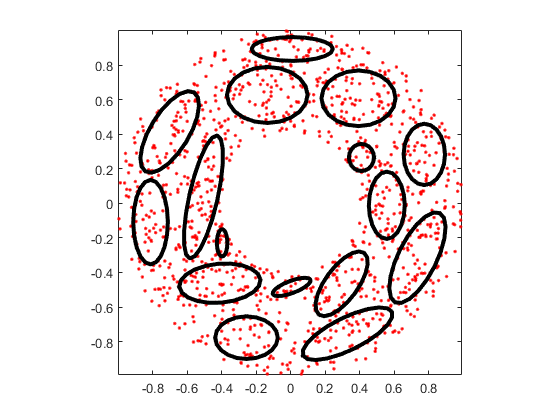
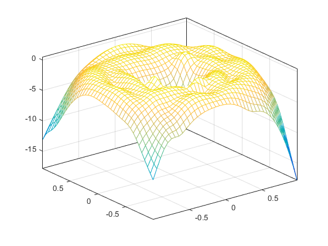
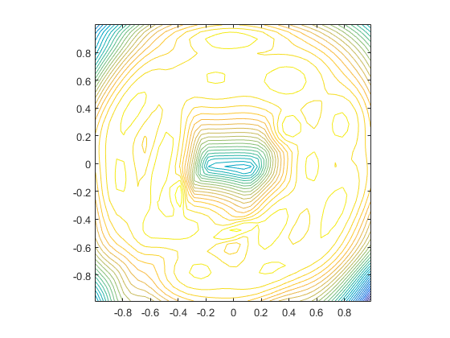

gmmGrow
Increase no. of gaussian components within a GMM
Contents
Syntax
- gmmPrm=gmmGrow(gmmPrm, targetGaussianNum)
Description
gmmPrm=gmmGrow(gmmPrm, targetGaussianNum) performs center splitting until the target no. of Gaussian components is reached.
The target number of Gaussian components should be less than or equal to the original number of Gaussian components.
Example
gmmGrowDemo
Start KMEANS to find the initial mean vectors... Warning: The EraseMode property is no longer supported and will error in a future release. Use the ANIMATEDLINE function for animating lines and points instead of EraseMode 'none'. Removing instances of EraseMode set to 'normal', 'xor', and 'background' has minimal impact. GMM iteration: 0/500, log likelihood. = -2189.259207 GMM iteration: 1/500, log likelihood. = -1940.812917 GMM iteration: 2/500, log likelihood. = -1940.812917 GMM total iteration count = 3, log likelihood. = -1940.812917 Start KMEANS to find the initial mean vectors... Warning: The EraseMode property is no longer supported and will error in a future release. Use the ANIMATEDLINE function for animating lines and points instead of EraseMode 'none'. Removing instances of EraseMode set to 'normal', 'xor', and 'background' has minimal impact. Warning: The EraseMode property is no longer supported and will error in a future release. Use the ANIMATEDLINE function for animating lines and points instead of EraseMode 'none'. Removing instances of EraseMode set to 'normal', 'xor', and 'background' has minimal impact. GMM iteration: 0/500, log likelihood. = -2030.741229 GMM iteration: 1/500, log likelihood. = -1952.903403 GMM iteration: 2/500, log likelihood. = -1927.500002 GMM iteration: 3/500, log likelihood. = -1903.130326 GMM iteration: 4/500, log likelihood. = -1874.867280 GMM iteration: 5/500, log likelihood. = -1846.211872 GMM iteration: 6/500, log likelihood. = -1826.475951 GMM iteration: 7/500, log likelihood. = -1818.711939 GMM iteration: 8/500, log likelihood. = -1816.928873 GMM iteration: 9/500, log likelihood. = -1816.622133 GMM iteration: 10/500, log likelihood. = -1816.569305 GMM iteration: 11/500, log likelihood. = -1816.557023 GMM iteration: 12/500, log likelihood. = -1816.552513 GMM iteration: 13/500, log likelihood. = -1816.550126 GMM iteration: 14/500, log likelihood. = -1816.548509 GMM iteration: 15/500, log likelihood. = -1816.547212 GMM iteration: 16/500, log likelihood. = -1816.546056 GMM iteration: 17/500, log likelihood. = -1816.544963 GMM iteration: 18/500, log likelihood. = -1816.543903 GMM iteration: 19/500, log likelihood. = -1816.542859 GMM iteration: 20/500, log likelihood. = -1816.541827 GMM iteration: 21/500, log likelihood. = -1816.540804 GMM iteration: 22/500, log likelihood. = -1816.539788 GMM iteration: 23/500, log likelihood. = -1816.538780 GMM iteration: 24/500, log likelihood. = -1816.537780 GMM iteration: 25/500, log likelihood. = -1816.536787 GMM iteration: 26/500, log likelihood. = -1816.535801 GMM iteration: 27/500, log likelihood. = -1816.534823 GMM iteration: 28/500, log likelihood. = -1816.533854 GMM iteration: 29/500, log likelihood. = -1816.532892 GMM iteration: 30/500, log likelihood. = -1816.531939 GMM iteration: 31/500, log likelihood. = -1816.530994 GMM iteration: 32/500, log likelihood. = -1816.530058 GMM iteration: 33/500, log likelihood. = -1816.529130 GMM iteration: 34/500, log likelihood. = -1816.528211 GMM iteration: 35/500, log likelihood. = -1816.527302 GMM iteration: 36/500, log likelihood. = -1816.526401 GMM iteration: 37/500, log likelihood. = -1816.525509 GMM iteration: 38/500, log likelihood. = -1816.524627 GMM iteration: 39/500, log likelihood. = -1816.523754 GMM iteration: 40/500, log likelihood. = -1816.522890 GMM iteration: 41/500, log likelihood. = -1816.522036 GMM iteration: 42/500, log likelihood. = -1816.521191 GMM iteration: 43/500, log likelihood. = -1816.520357 GMM iteration: 44/500, log likelihood. = -1816.519532 GMM iteration: 45/500, log likelihood. = -1816.518716 GMM iteration: 46/500, log likelihood. = -1816.517911 GMM iteration: 47/500, log likelihood. = -1816.517116 GMM iteration: 48/500, log likelihood. = -1816.516330 GMM iteration: 49/500, log likelihood. = -1816.515555 GMM iteration: 50/500, log likelihood. = -1816.514789 GMM iteration: 51/500, log likelihood. = -1816.514034 GMM iteration: 52/500, log likelihood. = -1816.513289 GMM iteration: 53/500, log likelihood. = -1816.512553 GMM iteration: 54/500, log likelihood. = -1816.511828 GMM iteration: 55/500, log likelihood. = -1816.511113 GMM iteration: 56/500, log likelihood. = -1816.510408 GMM iteration: 57/500, log likelihood. = -1816.509713 GMM iteration: 58/500, log likelihood. = -1816.509029 GMM iteration: 59/500, log likelihood. = -1816.508354 GMM iteration: 60/500, log likelihood. = -1816.507689 GMM iteration: 61/500, log likelihood. = -1816.507035 GMM iteration: 62/500, log likelihood. = -1816.506390 GMM iteration: 63/500, log likelihood. = -1816.505755 GMM iteration: 64/500, log likelihood. = -1816.505130 GMM iteration: 65/500, log likelihood. = -1816.504516 GMM iteration: 66/500, log likelihood. = -1816.503911 GMM iteration: 67/500, log likelihood. = -1816.503315 GMM iteration: 68/500, log likelihood. = -1816.502730 GMM iteration: 69/500, log likelihood. = -1816.502154 GMM iteration: 70/500, log likelihood. = -1816.501588 GMM iteration: 71/500, log likelihood. = -1816.501031 GMM iteration: 72/500, log likelihood. = -1816.500484 GMM iteration: 73/500, log likelihood. = -1816.499946 GMM iteration: 74/500, log likelihood. = -1816.499417 GMM iteration: 75/500, log likelihood. = -1816.498898 GMM iteration: 76/500, log likelihood. = -1816.498388 GMM iteration: 77/500, log likelihood. = -1816.497887 GMM iteration: 78/500, log likelihood. = -1816.497395 GMM iteration: 79/500, log likelihood. = -1816.496912 GMM iteration: 80/500, log likelihood. = -1816.496438 GMM iteration: 81/500, log likelihood. = -1816.495973 GMM iteration: 82/500, log likelihood. = -1816.495516 GMM iteration: 83/500, log likelihood. = -1816.495068 GMM iteration: 84/500, log likelihood. = -1816.494629 GMM iteration: 85/500, log likelihood. = -1816.494197 GMM iteration: 86/500, log likelihood. = -1816.493775 GMM iteration: 87/500, log likelihood. = -1816.493360 GMM iteration: 88/500, log likelihood. = -1816.492953 GMM iteration: 89/500, log likelihood. = -1816.492555 GMM iteration: 90/500, log likelihood. = -1816.492164 GMM iteration: 91/500, log likelihood. = -1816.491781 GMM iteration: 92/500, log likelihood. = -1816.491406 GMM iteration: 93/500, log likelihood. = -1816.491039 GMM iteration: 94/500, log likelihood. = -1816.490679 GMM iteration: 95/500, log likelihood. = -1816.490326 GMM iteration: 96/500, log likelihood. = -1816.489980 GMM iteration: 97/500, log likelihood. = -1816.489642 GMM iteration: 98/500, log likelihood. = -1816.489311 GMM iteration: 99/500, log likelihood. = -1816.488987 GMM iteration: 100/500, log likelihood. = -1816.488670 GMM iteration: 101/500, log likelihood. = -1816.488359 GMM iteration: 102/500, log likelihood. = -1816.488055 GMM iteration: 103/500, log likelihood. = -1816.487758 GMM iteration: 104/500, log likelihood. = -1816.487467 GMM iteration: 105/500, log likelihood. = -1816.487182 GMM iteration: 106/500, log likelihood. = -1816.486904 GMM iteration: 107/500, log likelihood. = -1816.486632 GMM iteration: 108/500, log likelihood. = -1816.486366 GMM iteration: 109/500, log likelihood. = -1816.486105 GMM iteration: 110/500, log likelihood. = -1816.485851 GMM iteration: 111/500, log likelihood. = -1816.485602 GMM iteration: 112/500, log likelihood. = -1816.485359 GMM iteration: 113/500, log likelihood. = -1816.485121 GMM iteration: 114/500, log likelihood. = -1816.484889 GMM iteration: 115/500, log likelihood. = -1816.484662 GMM iteration: 116/500, log likelihood. = -1816.484441 GMM iteration: 117/500, log likelihood. = -1816.484224 GMM iteration: 118/500, log likelihood. = -1816.484013 GMM iteration: 119/500, log likelihood. = -1816.483806 GMM iteration: 120/500, log likelihood. = -1816.483604 GMM iteration: 121/500, log likelihood. = -1816.483407 GMM iteration: 122/500, log likelihood. = -1816.483215 GMM iteration: 123/500, log likelihood. = -1816.483027 GMM iteration: 124/500, log likelihood. = -1816.482844 GMM iteration: 125/500, log likelihood. = -1816.482665 GMM iteration: 126/500, log likelihood. = -1816.482490 GMM iteration: 127/500, log likelihood. = -1816.482320 GMM iteration: 128/500, log likelihood. = -1816.482154 GMM iteration: 129/500, log likelihood. = -1816.481991 GMM iteration: 130/500, log likelihood. = -1816.481833 GMM iteration: 131/500, log likelihood. = -1816.481679 GMM iteration: 132/500, log likelihood. = -1816.481528 GMM iteration: 133/500, log likelihood. = -1816.481381 GMM iteration: 134/500, log likelihood. = -1816.481238 GMM iteration: 135/500, log likelihood. = -1816.481098 GMM iteration: 136/500, log likelihood. = -1816.480962 GMM iteration: 137/500, log likelihood. = -1816.480829 GMM iteration: 138/500, log likelihood. = -1816.480699 GMM iteration: 139/500, log likelihood. = -1816.480573 GMM iteration: 140/500, log likelihood. = -1816.480450 GMM iteration: 141/500, log likelihood. = -1816.480330 GMM iteration: 142/500, log likelihood. = -1816.480213 GMM iteration: 143/500, log likelihood. = -1816.480099 GMM iteration: 144/500, log likelihood. = -1816.479988 GMM iteration: 145/500, log likelihood. = -1816.479879 GMM iteration: 146/500, log likelihood. = -1816.479774 GMM iteration: 147/500, log likelihood. = -1816.479671 GMM iteration: 148/500, log likelihood. = -1816.479571 GMM iteration: 149/500, log likelihood. = -1816.479473 GMM iteration: 150/500, log likelihood. = -1816.479378 GMM iteration: 151/500, log likelihood. = -1816.479286 GMM iteration: 152/500, log likelihood. = -1816.479196 GMM iteration: 153/500, log likelihood. = -1816.479108 GMM iteration: 154/500, log likelihood. = -1816.479022 GMM iteration: 155/500, log likelihood. = -1816.478939 GMM iteration: 156/500, log likelihood. = -1816.478858 GMM iteration: 157/500, log likelihood. = -1816.478779 GMM iteration: 158/500, log likelihood. = -1816.478702 GMM iteration: 159/500, log likelihood. = -1816.478627 GMM iteration: 160/500, log likelihood. = -1816.478554 GMM iteration: 161/500, log likelihood. = -1816.478483 GMM iteration: 162/500, log likelihood. = -1816.478414 GMM iteration: 163/500, log likelihood. = -1816.478347 GMM iteration: 164/500, log likelihood. = -1816.478282 GMM iteration: 165/500, log likelihood. = -1816.478218 GMM iteration: 166/500, log likelihood. = -1816.478156 GMM iteration: 167/500, log likelihood. = -1816.478096 GMM iteration: 168/500, log likelihood. = -1816.478037 GMM iteration: 169/500, log likelihood. = -1816.477980 GMM iteration: 170/500, log likelihood. = -1816.477925 GMM iteration: 171/500, log likelihood. = -1816.477871 GMM iteration: 172/500, log likelihood. = -1816.477818 GMM iteration: 173/500, log likelihood. = -1816.477767 GMM iteration: 174/500, log likelihood. = -1816.477717 GMM iteration: 175/500, log likelihood. = -1816.477669 GMM iteration: 176/500, log likelihood. = -1816.477622 GMM iteration: 177/500, log likelihood. = -1816.477576 GMM iteration: 178/500, log likelihood. = -1816.477532 GMM iteration: 179/500, log likelihood. = -1816.477489 GMM iteration: 180/500, log likelihood. = -1816.477446 GMM iteration: 181/500, log likelihood. = -1816.477406 GMM iteration: 182/500, log likelihood. = -1816.477366 GMM iteration: 183/500, log likelihood. = -1816.477327 GMM iteration: 184/500, log likelihood. = -1816.477289 GMM iteration: 185/500, log likelihood. = -1816.477253 GMM iteration: 186/500, log likelihood. = -1816.477217 GMM iteration: 187/500, log likelihood. = -1816.477183 GMM iteration: 188/500, log likelihood. = -1816.477149 GMM iteration: 189/500, log likelihood. = -1816.477116 GMM iteration: 190/500, log likelihood. = -1816.477085 GMM iteration: 191/500, log likelihood. = -1816.477054 GMM iteration: 192/500, log likelihood. = -1816.477024 GMM iteration: 193/500, log likelihood. = -1816.476995 GMM iteration: 194/500, log likelihood. = -1816.476966 GMM iteration: 195/500, log likelihood. = -1816.476939 GMM iteration: 196/500, log likelihood. = -1816.476912 GMM iteration: 197/500, log likelihood. = -1816.476886 GMM iteration: 198/500, log likelihood. = -1816.476861 GMM iteration: 199/500, log likelihood. = -1816.476836 GMM iteration: 200/500, log likelihood. = -1816.476812 GMM iteration: 201/500, log likelihood. = -1816.476789 GMM iteration: 202/500, log likelihood. = -1816.476767 GMM iteration: 203/500, log likelihood. = -1816.476745 GMM iteration: 204/500, log likelihood. = -1816.476723 GMM iteration: 205/500, log likelihood. = -1816.476703 GMM iteration: 206/500, log likelihood. = -1816.476683 GMM iteration: 207/500, log likelihood. = -1816.476663 GMM iteration: 208/500, log likelihood. = -1816.476644 GMM iteration: 209/500, log likelihood. = -1816.476626 GMM iteration: 210/500, log likelihood. = -1816.476608 GMM iteration: 211/500, log likelihood. = -1816.476591 GMM iteration: 212/500, log likelihood. = -1816.476574 GMM iteration: 213/500, log likelihood. = -1816.476557 GMM iteration: 214/500, log likelihood. = -1816.476541 GMM iteration: 215/500, log likelihood. = -1816.476526 GMM iteration: 216/500, log likelihood. = -1816.476511 GMM iteration: 217/500, log likelihood. = -1816.476496 GMM iteration: 218/500, log likelihood. = -1816.476482 GMM iteration: 219/500, log likelihood. = -1816.476468 GMM iteration: 220/500, log likelihood. = -1816.476455 GMM iteration: 221/500, log likelihood. = -1816.476442 GMM iteration: 222/500, log likelihood. = -1816.476429 GMM iteration: 223/500, log likelihood. = -1816.476417 GMM iteration: 224/500, log likelihood. = -1816.476405 GMM iteration: 225/500, log likelihood. = -1816.476394 GMM iteration: 226/500, log likelihood. = -1816.476383 GMM iteration: 227/500, log likelihood. = -1816.476372 GMM iteration: 228/500, log likelihood. = -1816.476361 GMM iteration: 229/500, log likelihood. = -1816.476351 GMM iteration: 230/500, log likelihood. = -1816.476341 GMM iteration: 231/500, log likelihood. = -1816.476331 GMM iteration: 232/500, log likelihood. = -1816.476322 GMM iteration: 233/500, log likelihood. = -1816.476313 GMM iteration: 234/500, log likelihood. = -1816.476304 GMM iteration: 235/500, log likelihood. = -1816.476295 GMM iteration: 236/500, log likelihood. = -1816.476287 GMM iteration: 237/500, log likelihood. = -1816.476279 GMM iteration: 238/500, log likelihood. = -1816.476271 GMM iteration: 239/500, log likelihood. = -1816.476263 GMM iteration: 240/500, log likelihood. = -1816.476256 GMM iteration: 241/500, log likelihood. = -1816.476249 GMM iteration: 242/500, log likelihood. = -1816.476242 GMM iteration: 243/500, log likelihood. = -1816.476235 GMM iteration: 244/500, log likelihood. = -1816.476229 GMM iteration: 245/500, log likelihood. = -1816.476222 GMM iteration: 246/500, log likelihood. = -1816.476216 GMM iteration: 247/500, log likelihood. = -1816.476210 GMM iteration: 248/500, log likelihood. = -1816.476204 GMM iteration: 249/500, log likelihood. = -1816.476198 GMM iteration: 250/500, log likelihood. = -1816.476193 GMM iteration: 251/500, log likelihood. = -1816.476188 GMM iteration: 252/500, log likelihood. = -1816.476182 GMM iteration: 253/500, log likelihood. = -1816.476177 GMM iteration: 254/500, log likelihood. = -1816.476173 GMM iteration: 255/500, log likelihood. = -1816.476168 GMM iteration: 256/500, log likelihood. = -1816.476163 GMM iteration: 257/500, log likelihood. = -1816.476159 GMM iteration: 258/500, log likelihood. = -1816.476154 GMM iteration: 259/500, log likelihood. = -1816.476150 GMM iteration: 260/500, log likelihood. = -1816.476146 GMM iteration: 261/500, log likelihood. = -1816.476142 GMM iteration: 262/500, log likelihood. = -1816.476138 GMM iteration: 263/500, log likelihood. = -1816.476135 GMM iteration: 264/500, log likelihood. = -1816.476131 GMM iteration: 265/500, log likelihood. = -1816.476128 GMM iteration: 266/500, log likelihood. = -1816.476124 GMM iteration: 267/500, log likelihood. = -1816.476121 GMM iteration: 268/500, log likelihood. = -1816.476118 GMM iteration: 269/500, log likelihood. = -1816.476115 GMM iteration: 270/500, log likelihood. = -1816.476112 GMM iteration: 271/500, log likelihood. = -1816.476109 GMM iteration: 272/500, log likelihood. = -1816.476106 GMM iteration: 273/500, log likelihood. = -1816.476103 GMM iteration: 274/500, log likelihood. = -1816.476100 GMM iteration: 275/500, log likelihood. = -1816.476098 GMM iteration: 276/500, log likelihood. = -1816.476095 GMM iteration: 277/500, log likelihood. = -1816.476093 GMM iteration: 278/500, log likelihood. = -1816.476090 GMM iteration: 279/500, log likelihood. = -1816.476088 GMM iteration: 280/500, log likelihood. = -1816.476086 GMM iteration: 281/500, log likelihood. = -1816.476084 GMM iteration: 282/500, log likelihood. = -1816.476082 GMM iteration: 283/500, log likelihood. = -1816.476080 GMM iteration: 284/500, log likelihood. = -1816.476078 GMM iteration: 285/500, log likelihood. = -1816.476076 GMM iteration: 286/500, log likelihood. = -1816.476074 GMM iteration: 287/500, log likelihood. = -1816.476072 GMM iteration: 288/500, log likelihood. = -1816.476070 GMM iteration: 289/500, log likelihood. = -1816.476069 GMM iteration: 290/500, log likelihood. = -1816.476067 GMM iteration: 291/500, log likelihood. = -1816.476065 GMM iteration: 292/500, log likelihood. = -1816.476064 GMM iteration: 293/500, log likelihood. = -1816.476062 GMM iteration: 294/500, log likelihood. = -1816.476061 GMM iteration: 295/500, log likelihood. = -1816.476060 GMM iteration: 296/500, log likelihood. = -1816.476058 GMM iteration: 297/500, log likelihood. = -1816.476057 GMM iteration: 298/500, log likelihood. = -1816.476056 GMM iteration: 299/500, log likelihood. = -1816.476054 GMM iteration: 300/500, log likelihood. = -1816.476053 GMM iteration: 301/500, log likelihood. = -1816.476052 GMM iteration: 302/500, log likelihood. = -1816.476051 GMM iteration: 303/500, log likelihood. = -1816.476050 GMM iteration: 304/500, log likelihood. = -1816.476049 GMM iteration: 305/500, log likelihood. = -1816.476048 GMM iteration: 306/500, log likelihood. = -1816.476047 GMM iteration: 307/500, log likelihood. = -1816.476046 GMM iteration: 308/500, log likelihood. = -1816.476045 GMM iteration: 309/500, log likelihood. = -1816.476044 GMM iteration: 310/500, log likelihood. = -1816.476043 GMM iteration: 311/500, log likelihood. = -1816.476042 GMM iteration: 312/500, log likelihood. = -1816.476041 GMM iteration: 313/500, log likelihood. = -1816.476040 GMM iteration: 314/500, log likelihood. = -1816.476039 GMM iteration: 315/500, log likelihood. = -1816.476039 GMM iteration: 316/500, log likelihood. = -1816.476038 GMM iteration: 317/500, log likelihood. = -1816.476037 GMM iteration: 318/500, log likelihood. = -1816.476037 GMM iteration: 319/500, log likelihood. = -1816.476036 GMM iteration: 320/500, log likelihood. = -1816.476035 GMM iteration: 321/500, log likelihood. = -1816.476035 GMM iteration: 322/500, log likelihood. = -1816.476034 GMM iteration: 323/500, log likelihood. = -1816.476033 GMM iteration: 324/500, log likelihood. = -1816.476033 GMM iteration: 325/500, log likelihood. = -1816.476032 GMM iteration: 326/500, log likelihood. = -1816.476032 GMM iteration: 327/500, log likelihood. = -1816.476031 GMM iteration: 328/500, log likelihood. = -1816.476031 GMM iteration: 329/500, log likelihood. = -1816.476030 GMM iteration: 330/500, log likelihood. = -1816.476030 GMM iteration: 331/500, log likelihood. = -1816.476029 GMM iteration: 332/500, log likelihood. = -1816.476029 GMM iteration: 333/500, log likelihood. = -1816.476028 GMM iteration: 334/500, log likelihood. = -1816.476028 GMM iteration: 335/500, log likelihood. = -1816.476027 GMM iteration: 336/500, log likelihood. = -1816.476027 GMM iteration: 337/500, log likelihood. = -1816.476027 GMM iteration: 338/500, log likelihood. = -1816.476026 GMM iteration: 339/500, log likelihood. = -1816.476026 GMM iteration: 340/500, log likelihood. = -1816.476025 GMM iteration: 341/500, log likelihood. = -1816.476025 GMM iteration: 342/500, log likelihood. = -1816.476025 GMM iteration: 343/500, log likelihood. = -1816.476024 GMM iteration: 344/500, log likelihood. = -1816.476024 GMM iteration: 345/500, log likelihood. = -1816.476024 GMM iteration: 346/500, log likelihood. = -1816.476024 GMM iteration: 347/500, log likelihood. = -1816.476023 GMM iteration: 348/500, log likelihood. = -1816.476023 GMM iteration: 349/500, log likelihood. = -1816.476023 GMM iteration: 350/500, log likelihood. = -1816.476022 GMM iteration: 351/500, log likelihood. = -1816.476022 GMM iteration: 352/500, log likelihood. = -1816.476022 GMM iteration: 353/500, log likelihood. = -1816.476022 GMM iteration: 354/500, log likelihood. = -1816.476021 GMM iteration: 355/500, log likelihood. = -1816.476021 GMM iteration: 356/500, log likelihood. = -1816.476021 GMM iteration: 357/500, log likelihood. = -1816.476021 GMM iteration: 358/500, log likelihood. = -1816.476021 GMM iteration: 359/500, log likelihood. = -1816.476020 GMM iteration: 360/500, log likelihood. = -1816.476020 GMM iteration: 361/500, log likelihood. = -1816.476020 GMM iteration: 362/500, log likelihood. = -1816.476020 GMM iteration: 363/500, log likelihood. = -1816.476020 GMM iteration: 364/500, log likelihood. = -1816.476020 GMM iteration: 365/500, log likelihood. = -1816.476019 GMM iteration: 366/500, log likelihood. = -1816.476019 GMM iteration: 367/500, log likelihood. = -1816.476019 GMM iteration: 368/500, log likelihood. = -1816.476019 GMM iteration: 369/500, log likelihood. = -1816.476019 GMM iteration: 370/500, log likelihood. = -1816.476019 GMM iteration: 371/500, log likelihood. = -1816.476018 GMM iteration: 372/500, log likelihood. = -1816.476018 GMM iteration: 373/500, log likelihood. = -1816.476018 GMM iteration: 374/500, log likelihood. = -1816.476018 GMM iteration: 375/500, log likelihood. = -1816.476018 GMM iteration: 376/500, log likelihood. = -1816.476018 GMM iteration: 377/500, log likelihood. = -1816.476018 GMM iteration: 378/500, log likelihood. = -1816.476018 GMM iteration: 379/500, log likelihood. = -1816.476017 GMM iteration: 380/500, log likelihood. = -1816.476017 GMM iteration: 381/500, log likelihood. = -1816.476017 GMM iteration: 382/500, log likelihood. = -1816.476017 GMM iteration: 383/500, log likelihood. = -1816.476017 GMM iteration: 384/500, log likelihood. = -1816.476017 GMM iteration: 385/500, log likelihood. = -1816.476017 GMM iteration: 386/500, log likelihood. = -1816.476017 GMM iteration: 387/500, log likelihood. = -1816.476017 GMM iteration: 388/500, log likelihood. = -1816.476017 GMM iteration: 389/500, log likelihood. = -1816.476017 GMM iteration: 390/500, log likelihood. = -1816.476016 GMM iteration: 391/500, log likelihood. = -1816.476016 GMM iteration: 392/500, log likelihood. = -1816.476016 GMM iteration: 393/500, log likelihood. = -1816.476016 GMM iteration: 394/500, log likelihood. = -1816.476016 GMM iteration: 395/500, log likelihood. = -1816.476016 GMM iteration: 396/500, log likelihood. = -1816.476016 GMM iteration: 397/500, log likelihood. = -1816.476016 GMM iteration: 398/500, log likelihood. = -1816.476016 GMM iteration: 399/500, log likelihood. = -1816.476016 GMM iteration: 400/500, log likelihood. = -1816.476016 GMM iteration: 401/500, log likelihood. = -1816.476016 GMM iteration: 402/500, log likelihood. = -1816.476016 GMM iteration: 403/500, log likelihood. = -1816.476016 GMM iteration: 404/500, log likelihood. = -1816.476016 GMM iteration: 405/500, log likelihood. = -1816.476016 GMM iteration: 406/500, log likelihood. = -1816.476016 GMM iteration: 407/500, log likelihood. = -1816.476015 GMM iteration: 408/500, log likelihood. = -1816.476015 GMM iteration: 409/500, log likelihood. = -1816.476015 GMM iteration: 410/500, log likelihood. = -1816.476015 GMM iteration: 411/500, log likelihood. = -1816.476015 GMM iteration: 412/500, log likelihood. = -1816.476015 GMM iteration: 413/500, log likelihood. = -1816.476015 GMM iteration: 414/500, log likelihood. = -1816.476015 GMM iteration: 415/500, log likelihood. = -1816.476015 GMM iteration: 416/500, log likelihood. = -1816.476015 GMM iteration: 417/500, log likelihood. = -1816.476015 GMM iteration: 418/500, log likelihood. = -1816.476015 GMM iteration: 419/500, log likelihood. = -1816.476015 GMM iteration: 420/500, log likelihood. = -1816.476015 GMM iteration: 421/500, log likelihood. = -1816.476015 GMM iteration: 422/500, log likelihood. = -1816.476015 GMM iteration: 423/500, log likelihood. = -1816.476015 GMM iteration: 424/500, log likelihood. = -1816.476015 GMM iteration: 425/500, log likelihood. = -1816.476015 GMM iteration: 426/500, log likelihood. = -1816.476015 GMM iteration: 427/500, log likelihood. = -1816.476015 GMM iteration: 428/500, log likelihood. = -1816.476015 GMM iteration: 429/500, log likelihood. = -1816.476015 GMM iteration: 430/500, log likelihood. = -1816.476015 GMM iteration: 431/500, log likelihood. = -1816.476015 GMM iteration: 432/500, log likelihood. = -1816.476015 GMM iteration: 433/500, log likelihood. = -1816.476015 GMM iteration: 434/500, log likelihood. = -1816.476015 GMM iteration: 435/500, log likelihood. = -1816.476015 GMM iteration: 436/500, log likelihood. = -1816.476015 GMM iteration: 437/500, log likelihood. = -1816.476015 GMM iteration: 438/500, log likelihood. = -1816.476015 GMM iteration: 439/500, log likelihood. = -1816.476015 GMM iteration: 440/500, log likelihood. = -1816.476015 GMM iteration: 441/500, log likelihood. = -1816.476015 GMM iteration: 442/500, log likelihood. = -1816.476015 GMM iteration: 443/500, log likelihood. = -1816.476015 GMM iteration: 444/500, log likelihood. = -1816.476015 GMM iteration: 445/500, log likelihood. = -1816.476014 GMM iteration: 446/500, log likelihood. = -1816.476014 GMM iteration: 447/500, log likelihood. = -1816.476014 GMM iteration: 448/500, log likelihood. = -1816.476014 GMM iteration: 449/500, log likelihood. = -1816.476014 GMM iteration: 450/500, log likelihood. = -1816.476014 GMM iteration: 451/500, log likelihood. = -1816.476014 GMM iteration: 452/500, log likelihood. = -1816.476014 GMM iteration: 453/500, log likelihood. = -1816.476014 GMM iteration: 454/500, log likelihood. = -1816.476014 GMM iteration: 455/500, log likelihood. = -1816.476014 GMM iteration: 456/500, log likelihood. = -1816.476014 GMM iteration: 457/500, log likelihood. = -1816.476014 GMM iteration: 458/500, log likelihood. = -1816.476014 GMM iteration: 459/500, log likelihood. = -1816.476014 GMM iteration: 460/500, log likelihood. = -1816.476014 GMM iteration: 461/500, log likelihood. = -1816.476014 GMM iteration: 462/500, log likelihood. = -1816.476014 GMM iteration: 463/500, log likelihood. = -1816.476014 GMM iteration: 464/500, log likelihood. = -1816.476014 GMM iteration: 465/500, log likelihood. = -1816.476014 GMM iteration: 466/500, log likelihood. = -1816.476014 GMM iteration: 467/500, log likelihood. = -1816.476014 GMM iteration: 468/500, log likelihood. = -1816.476014 GMM iteration: 469/500, log likelihood. = -1816.476014 GMM iteration: 470/500, log likelihood. = -1816.476014 GMM iteration: 471/500, log likelihood. = -1816.476014 GMM iteration: 472/500, log likelihood. = -1816.476014 GMM iteration: 473/500, log likelihood. = -1816.476014 GMM iteration: 474/500, log likelihood. = -1816.476014 GMM iteration: 475/500, log likelihood. = -1816.476014 GMM iteration: 476/500, log likelihood. = -1816.476014 GMM iteration: 477/500, log likelihood. = -1816.476014 GMM iteration: 478/500, log likelihood. = -1816.476014 GMM iteration: 479/500, log likelihood. = -1816.476014 GMM iteration: 480/500, log likelihood. = -1816.476014 GMM iteration: 481/500, log likelihood. = -1816.476014 GMM iteration: 482/500, log likelihood. = -1816.476014 GMM iteration: 483/500, log likelihood. = -1816.476014 GMM iteration: 484/500, log likelihood. = -1816.476014 GMM iteration: 485/500, log likelihood. = -1816.476014 GMM iteration: 486/500, log likelihood. = -1816.476014 GMM iteration: 487/500, log likelihood. = -1816.476014 GMM iteration: 488/500, log likelihood. = -1816.476014 GMM iteration: 489/500, log likelihood. = -1816.476014 GMM iteration: 490/500, log likelihood. = -1816.476014 GMM iteration: 491/500, log likelihood. = -1816.476014 GMM iteration: 492/500, log likelihood. = -1816.476014 GMM iteration: 493/500, log likelihood. = -1816.476014 GMM iteration: 494/500, log likelihood. = -1816.476014 GMM iteration: 495/500, log likelihood. = -1816.476014 GMM iteration: 496/500, log likelihood. = -1816.476014 GMM iteration: 497/500, log likelihood. = -1816.476014 GMM iteration: 498/500, log likelihood. = -1816.476014 GMM iteration: 499/500, log likelihood. = -1816.476014 GMM total iteration count = 500, log likelihood. = -1816.476014 Start KMEANS to find the initial mean vectors... Warning: The EraseMode property is no longer supported and will error in a future release. Use the ANIMATEDLINE function for animating lines and points instead of EraseMode 'none'. Removing instances of EraseMode set to 'normal', 'xor', and 'background' has minimal impact. Warning: The EraseMode property is no longer supported and will error in a future release. Use the ANIMATEDLINE function for animating lines and points instead of EraseMode 'none'. Removing instances of EraseMode set to 'normal', 'xor', and 'background' has minimal impact. Warning: The EraseMode property is no longer supported and will error in a future release. Use the ANIMATEDLINE function for animating lines and points instead of EraseMode 'none'. Removing instances of EraseMode set to 'normal', 'xor', and 'background' has minimal impact. Warning: The EraseMode property is no longer supported and will error in a future release. Use the ANIMATEDLINE function for animating lines and points instead of EraseMode 'none'. Removing instances of EraseMode set to 'normal', 'xor', and 'background' has minimal impact. GMM iteration: 0/500, log likelihood. = -2125.965075 GMM iteration: 1/500, log likelihood. = -1835.096582 GMM iteration: 2/500, log likelihood. = -1739.062301 GMM iteration: 3/500, log likelihood. = -1621.994861 GMM iteration: 4/500, log likelihood. = -1522.404960 GMM iteration: 5/500, log likelihood. = -1470.200761 GMM iteration: 6/500, log likelihood. = -1455.240817 GMM iteration: 7/500, log likelihood. = -1452.017100 GMM iteration: 8/500, log likelihood. = -1450.905992 GMM iteration: 9/500, log likelihood. = -1450.189611 GMM iteration: 10/500, log likelihood. = -1449.633152 GMM iteration: 11/500, log likelihood. = -1449.228004 GMM iteration: 12/500, log likelihood. = -1449.026967 GMM iteration: 13/500, log likelihood. = -1448.924395 GMM iteration: 14/500, log likelihood. = -1448.869997 GMM iteration: 15/500, log likelihood. = -1448.839627 GMM iteration: 16/500, log likelihood. = -1448.821522 GMM iteration: 17/500, log likelihood. = -1448.809910 GMM iteration: 18/500, log likelihood. = -1448.801918 GMM iteration: 19/500, log likelihood. = -1448.796081 GMM iteration: 20/500, log likelihood. = -1448.791620 GMM iteration: 21/500, log likelihood. = -1448.788105 GMM iteration: 22/500, log likelihood. = -1448.785278 GMM iteration: 23/500, log likelihood. = -1448.782973 GMM iteration: 24/500, log likelihood. = -1448.781080 GMM iteration: 25/500, log likelihood. = -1448.779517 GMM iteration: 26/500, log likelihood. = -1448.778221 GMM iteration: 27/500, log likelihood. = -1448.777146 GMM iteration: 28/500, log likelihood. = -1448.776252 GMM iteration: 29/500, log likelihood. = -1448.775508 GMM iteration: 30/500, log likelihood. = -1448.774888 GMM iteration: 31/500, log likelihood. = -1448.774372 GMM iteration: 32/500, log likelihood. = -1448.773942 GMM iteration: 33/500, log likelihood. = -1448.773584 GMM iteration: 34/500, log likelihood. = -1448.773285 GMM iteration: 35/500, log likelihood. = -1448.773036 GMM iteration: 36/500, log likelihood. = -1448.772829 GMM iteration: 37/500, log likelihood. = -1448.772655 GMM iteration: 38/500, log likelihood. = -1448.772511 GMM iteration: 39/500, log likelihood. = -1448.772390 GMM iteration: 40/500, log likelihood. = -1448.772290 GMM iteration: 41/500, log likelihood. = -1448.772206 GMM iteration: 42/500, log likelihood. = -1448.772136 GMM iteration: 43/500, log likelihood. = -1448.772078 GMM iteration: 44/500, log likelihood. = -1448.772029 GMM iteration: 45/500, log likelihood. = -1448.771989 GMM iteration: 46/500, log likelihood. = -1448.771955 GMM iteration: 47/500, log likelihood. = -1448.771927 GMM iteration: 48/500, log likelihood. = -1448.771903 GMM iteration: 49/500, log likelihood. = -1448.771883 GMM iteration: 50/500, log likelihood. = -1448.771867 GMM iteration: 51/500, log likelihood. = -1448.771853 GMM iteration: 52/500, log likelihood. = -1448.771842 GMM iteration: 53/500, log likelihood. = -1448.771832 GMM iteration: 54/500, log likelihood. = -1448.771824 GMM iteration: 55/500, log likelihood. = -1448.771818 GMM iteration: 56/500, log likelihood. = -1448.771812 GMM iteration: 57/500, log likelihood. = -1448.771807 GMM iteration: 58/500, log likelihood. = -1448.771804 GMM iteration: 59/500, log likelihood. = -1448.771800 GMM iteration: 60/500, log likelihood. = -1448.771798 GMM iteration: 61/500, log likelihood. = -1448.771795 GMM iteration: 62/500, log likelihood. = -1448.771794 GMM iteration: 63/500, log likelihood. = -1448.771792 GMM iteration: 64/500, log likelihood. = -1448.771791 GMM iteration: 65/500, log likelihood. = -1448.771790 GMM iteration: 66/500, log likelihood. = -1448.771789 GMM iteration: 67/500, log likelihood. = -1448.771788 GMM iteration: 68/500, log likelihood. = -1448.771787 GMM iteration: 69/500, log likelihood. = -1448.771787 GMM iteration: 70/500, log likelihood. = -1448.771786 GMM iteration: 71/500, log likelihood. = -1448.771786 GMM iteration: 72/500, log likelihood. = -1448.771786 GMM iteration: 73/500, log likelihood. = -1448.771785 GMM iteration: 74/500, log likelihood. = -1448.771785 GMM iteration: 75/500, log likelihood. = -1448.771785 GMM iteration: 76/500, log likelihood. = -1448.771785 GMM iteration: 77/500, log likelihood. = -1448.771785 GMM iteration: 78/500, log likelihood. = -1448.771785 GMM iteration: 79/500, log likelihood. = -1448.771785 GMM iteration: 80/500, log likelihood. = -1448.771785 GMM iteration: 81/500, log likelihood. = -1448.771784 GMM iteration: 82/500, log likelihood. = -1448.771784 GMM iteration: 83/500, log likelihood. = -1448.771784 GMM iteration: 84/500, log likelihood. = -1448.771784 GMM iteration: 85/500, log likelihood. = -1448.771784 GMM iteration: 86/500, log likelihood. = -1448.771784 GMM iteration: 87/500, log likelihood. = -1448.771784 GMM iteration: 88/500, log likelihood. = -1448.771784 GMM iteration: 89/500, log likelihood. = -1448.771784 GMM iteration: 90/500, log likelihood. = -1448.771784 GMM iteration: 91/500, log likelihood. = -1448.771784 GMM iteration: 92/500, log likelihood. = -1448.771784 GMM iteration: 93/500, log likelihood. = -1448.771784 GMM iteration: 94/500, log likelihood. = -1448.771784 GMM iteration: 95/500, log likelihood. = -1448.771784 GMM iteration: 96/500, log likelihood. = -1448.771784 GMM iteration: 97/500, log likelihood. = -1448.771784 GMM iteration: 98/500, log likelihood. = -1448.771784 GMM iteration: 99/500, log likelihood. = -1448.771784 GMM iteration: 100/500, log likelihood. = -1448.771784 GMM iteration: 101/500, log likelihood. = -1448.771784 GMM iteration: 102/500, log likelihood. = -1448.771784 GMM iteration: 103/500, log likelihood. = -1448.771784 GMM iteration: 104/500, log likelihood. = -1448.771784 GMM iteration: 105/500, log likelihood. = -1448.771784 GMM iteration: 106/500, log likelihood. = -1448.771784 GMM iteration: 107/500, log likelihood. = -1448.771784 GMM iteration: 108/500, log likelihood. = -1448.771784 GMM iteration: 109/500, log likelihood. = -1448.771784 GMM iteration: 110/500, log likelihood. = -1448.771784 GMM iteration: 111/500, log likelihood. = -1448.771784 GMM iteration: 112/500, log likelihood. = -1448.771784 GMM iteration: 113/500, log likelihood. = -1448.771784 GMM iteration: 114/500, log likelihood. = -1448.771784 GMM iteration: 115/500, log likelihood. = -1448.771784 GMM iteration: 116/500, log likelihood. = -1448.771784 GMM iteration: 117/500, log likelihood. = -1448.771784 GMM iteration: 118/500, log likelihood. = -1448.771784 GMM iteration: 119/500, log likelihood. = -1448.771784 GMM iteration: 120/500, log likelihood. = -1448.771784 GMM iteration: 121/500, log likelihood. = -1448.771784 GMM iteration: 122/500, log likelihood. = -1448.771784 GMM iteration: 123/500, log likelihood. = -1448.771784 GMM iteration: 124/500, log likelihood. = -1448.771784 GMM iteration: 125/500, log likelihood. = -1448.771784 GMM iteration: 126/500, log likelihood. = -1448.771784 GMM iteration: 127/500, log likelihood. = -1448.771784 GMM iteration: 128/500, log likelihood. = -1448.771784 GMM iteration: 129/500, log likelihood. = -1448.771784 GMM iteration: 130/500, log likelihood. = -1448.771784 GMM iteration: 131/500, log likelihood. = -1448.771784 GMM iteration: 132/500, log likelihood. = -1448.771784 GMM iteration: 133/500, log likelihood. = -1448.771784 GMM iteration: 134/500, log likelihood. = -1448.771784 GMM iteration: 135/500, log likelihood. = -1448.771784 GMM iteration: 136/500, log likelihood. = -1448.771784 GMM iteration: 137/500, log likelihood. = -1448.771784 GMM iteration: 138/500, log likelihood. = -1448.771784 GMM total iteration count = 139, log likelihood. = -1448.771784 Start KMEANS to find the initial mean vectors... Warning: The EraseMode property is no longer supported and will error in a future release. Use the ANIMATEDLINE function for animating lines and points instead of EraseMode 'none'. Removing instances of EraseMode set to 'normal', 'xor', and 'background' has minimal impact. Warning: The EraseMode property is no longer supported and will error in a future release. Use the ANIMATEDLINE function for animating lines and points instead of EraseMode 'none'. Removing instances of EraseMode set to 'normal', 'xor', and 'background' has minimal impact. Warning: The EraseMode property is no longer supported and will error in a future release. Use the ANIMATEDLINE function for animating lines and points instead of EraseMode 'none'. Removing instances of EraseMode set to 'normal', 'xor', and 'background' has minimal impact. Warning: The EraseMode property is no longer supported and will error in a future release. Use the ANIMATEDLINE function for animating lines and points instead of EraseMode 'none'. Removing instances of EraseMode set to 'normal', 'xor', and 'background' has minimal impact. Warning: The EraseMode property is no longer supported and will error in a future release. Use the ANIMATEDLINE function for animating lines and points instead of EraseMode 'none'. Removing instances of EraseMode set to 'normal', 'xor', and 'background' has minimal impact. Warning: The EraseMode property is no longer supported and will error in a future release. Use the ANIMATEDLINE function for animating lines and points instead of EraseMode 'none'. Removing instances of EraseMode set to 'normal', 'xor', and 'background' has minimal impact. Warning: The EraseMode property is no longer supported and will error in a future release. Use the ANIMATEDLINE function for animating lines and points instead of EraseMode 'none'. Removing instances of EraseMode set to 'normal', 'xor', and 'background' has minimal impact. Warning: The EraseMode property is no longer supported and will error in a future release. Use the ANIMATEDLINE function for animating lines and points instead of EraseMode 'none'. Removing instances of EraseMode set to 'normal', 'xor', and 'background' has minimal impact. GMM iteration: 0/500, log likelihood. = -2244.973482 GMM iteration: 1/500, log likelihood. = -1864.380956 GMM iteration: 2/500, log likelihood. = -1794.449354 GMM iteration: 3/500, log likelihood. = -1692.877406 GMM iteration: 4/500, log likelihood. = -1590.070882 GMM iteration: 5/500, log likelihood. = -1515.535345 GMM iteration: 6/500, log likelihood. = -1471.753954 GMM iteration: 7/500, log likelihood. = -1447.432677 GMM iteration: 8/500, log likelihood. = -1432.418841 GMM iteration: 9/500, log likelihood. = -1421.954593 GMM iteration: 10/500, log likelihood. = -1414.348343 GMM iteration: 11/500, log likelihood. = -1408.953474 GMM iteration: 12/500, log likelihood. = -1405.284532 GMM iteration: 13/500, log likelihood. = -1402.816633 GMM iteration: 14/500, log likelihood. = -1401.079419 GMM iteration: 15/500, log likelihood. = -1399.746140 GMM iteration: 16/500, log likelihood. = -1398.631682 GMM iteration: 17/500, log likelihood. = -1397.645961 GMM iteration: 18/500, log likelihood. = -1396.750236 GMM iteration: 19/500, log likelihood. = -1395.929926 GMM iteration: 20/500, log likelihood. = -1395.180478 GMM iteration: 21/500, log likelihood. = -1394.500562 GMM iteration: 22/500, log likelihood. = -1393.888935 GMM iteration: 23/500, log likelihood. = -1393.343170 GMM iteration: 24/500, log likelihood. = -1392.859434 GMM iteration: 25/500, log likelihood. = -1392.432855 GMM iteration: 26/500, log likelihood. = -1392.058110 GMM iteration: 27/500, log likelihood. = -1391.729942 GMM iteration: 28/500, log likelihood. = -1391.443446 GMM iteration: 29/500, log likelihood. = -1391.194125 GMM iteration: 30/500, log likelihood. = -1390.977812 GMM iteration: 31/500, log likelihood. = -1390.790577 GMM iteration: 32/500, log likelihood. = -1390.628682 GMM iteration: 33/500, log likelihood. = -1390.488612 GMM iteration: 34/500, log likelihood. = -1390.367127 GMM iteration: 35/500, log likelihood. = -1390.261327 GMM iteration: 36/500, log likelihood. = -1390.168694 GMM iteration: 37/500, log likelihood. = -1390.087091 GMM iteration: 38/500, log likelihood. = -1390.014748 GMM iteration: 39/500, log likelihood. = -1389.950218 GMM iteration: 40/500, log likelihood. = -1389.892331 GMM iteration: 41/500, log likelihood. = -1389.840141 GMM iteration: 42/500, log likelihood. = -1389.792883 GMM iteration: 43/500, log likelihood. = -1389.749932 GMM iteration: 44/500, log likelihood. = -1389.710776 GMM iteration: 45/500, log likelihood. = -1389.674984 GMM iteration: 46/500, log likelihood. = -1389.642195 GMM iteration: 47/500, log likelihood. = -1389.612097 GMM iteration: 48/500, log likelihood. = -1389.584421 GMM iteration: 49/500, log likelihood. = -1389.558929 GMM iteration: 50/500, log likelihood. = -1389.535414 GMM iteration: 51/500, log likelihood. = -1389.513687 GMM iteration: 52/500, log likelihood. = -1389.493582 GMM iteration: 53/500, log likelihood. = -1389.474948 GMM iteration: 54/500, log likelihood. = -1389.457649 GMM iteration: 55/500, log likelihood. = -1389.441561 GMM iteration: 56/500, log likelihood. = -1389.426573 GMM iteration: 57/500, log likelihood. = -1389.412581 GMM iteration: 58/500, log likelihood. = -1389.399495 GMM iteration: 59/500, log likelihood. = -1389.387227 GMM iteration: 60/500, log likelihood. = -1389.375703 GMM iteration: 61/500, log likelihood. = -1389.364850 GMM iteration: 62/500, log likelihood. = -1389.354604 GMM iteration: 63/500, log likelihood. = -1389.344907 GMM iteration: 64/500, log likelihood. = -1389.335705 GMM iteration: 65/500, log likelihood. = -1389.326948 GMM iteration: 66/500, log likelihood. = -1389.318593 GMM iteration: 67/500, log likelihood. = -1389.310597 GMM iteration: 68/500, log likelihood. = -1389.302923 GMM iteration: 69/500, log likelihood. = -1389.295538 GMM iteration: 70/500, log likelihood. = -1389.288410 GMM iteration: 71/500, log likelihood. = -1389.281510 GMM iteration: 72/500, log likelihood. = -1389.274814 GMM iteration: 73/500, log likelihood. = -1389.268298 GMM iteration: 74/500, log likelihood. = -1389.261940 GMM iteration: 75/500, log likelihood. = -1389.255721 GMM iteration: 76/500, log likelihood. = -1389.249624 GMM iteration: 77/500, log likelihood. = -1389.243634 GMM iteration: 78/500, log likelihood. = -1389.237737 GMM iteration: 79/500, log likelihood. = -1389.231920 GMM iteration: 80/500, log likelihood. = -1389.226172 GMM iteration: 81/500, log likelihood. = -1389.220485 GMM iteration: 82/500, log likelihood. = -1389.214848 GMM iteration: 83/500, log likelihood. = -1389.209256 GMM iteration: 84/500, log likelihood. = -1389.203703 GMM iteration: 85/500, log likelihood. = -1389.198182 GMM iteration: 86/500, log likelihood. = -1389.192690 GMM iteration: 87/500, log likelihood. = -1389.187223 GMM iteration: 88/500, log likelihood. = -1389.181779 GMM iteration: 89/500, log likelihood. = -1389.176356 GMM iteration: 90/500, log likelihood. = -1389.170952 GMM iteration: 91/500, log likelihood. = -1389.165568 GMM iteration: 92/500, log likelihood. = -1389.160202 GMM iteration: 93/500, log likelihood. = -1389.154856 GMM iteration: 94/500, log likelihood. = -1389.149530 GMM iteration: 95/500, log likelihood. = -1389.144224 GMM iteration: 96/500, log likelihood. = -1389.138939 GMM iteration: 97/500, log likelihood. = -1389.133676 GMM iteration: 98/500, log likelihood. = -1389.128436 GMM iteration: 99/500, log likelihood. = -1389.123220 GMM iteration: 100/500, log likelihood. = -1389.118030 GMM iteration: 101/500, log likelihood. = -1389.112866 GMM iteration: 102/500, log likelihood. = -1389.107730 GMM iteration: 103/500, log likelihood. = -1389.102623 GMM iteration: 104/500, log likelihood. = -1389.097545 GMM iteration: 105/500, log likelihood. = -1389.092498 GMM iteration: 106/500, log likelihood. = -1389.087482 GMM iteration: 107/500, log likelihood. = -1389.082499 GMM iteration: 108/500, log likelihood. = -1389.077548 GMM iteration: 109/500, log likelihood. = -1389.072630 GMM iteration: 110/500, log likelihood. = -1389.067744 GMM iteration: 111/500, log likelihood. = -1389.062893 GMM iteration: 112/500, log likelihood. = -1389.058074 GMM iteration: 113/500, log likelihood. = -1389.053288 GMM iteration: 114/500, log likelihood. = -1389.048536 GMM iteration: 115/500, log likelihood. = -1389.043815 GMM iteration: 116/500, log likelihood. = -1389.039127 GMM iteration: 117/500, log likelihood. = -1389.034471 GMM iteration: 118/500, log likelihood. = -1389.029845 GMM iteration: 119/500, log likelihood. = -1389.025250 GMM iteration: 120/500, log likelihood. = -1389.020684 GMM iteration: 121/500, log likelihood. = -1389.016148 GMM iteration: 122/500, log likelihood. = -1389.011640 GMM iteration: 123/500, log likelihood. = -1389.007160 GMM iteration: 124/500, log likelihood. = -1389.002706 GMM iteration: 125/500, log likelihood. = -1388.998279 GMM iteration: 126/500, log likelihood. = -1388.993877 GMM iteration: 127/500, log likelihood. = -1388.989500 GMM iteration: 128/500, log likelihood. = -1388.985148 GMM iteration: 129/500, log likelihood. = -1388.980818 GMM iteration: 130/500, log likelihood. = -1388.976511 GMM iteration: 131/500, log likelihood. = -1388.972227 GMM iteration: 132/500, log likelihood. = -1388.967964 GMM iteration: 133/500, log likelihood. = -1388.963723 GMM iteration: 134/500, log likelihood. = -1388.959502 GMM iteration: 135/500, log likelihood. = -1388.955301 GMM iteration: 136/500, log likelihood. = -1388.951121 GMM iteration: 137/500, log likelihood. = -1388.946959 GMM iteration: 138/500, log likelihood. = -1388.942818 GMM iteration: 139/500, log likelihood. = -1388.938694 GMM iteration: 140/500, log likelihood. = -1388.934590 GMM iteration: 141/500, log likelihood. = -1388.930504 GMM iteration: 142/500, log likelihood. = -1388.926437 GMM iteration: 143/500, log likelihood. = -1388.922388 GMM iteration: 144/500, log likelihood. = -1388.918356 GMM iteration: 145/500, log likelihood. = -1388.914343 GMM iteration: 146/500, log likelihood. = -1388.910348 GMM iteration: 147/500, log likelihood. = -1388.906371 GMM iteration: 148/500, log likelihood. = -1388.902412 GMM iteration: 149/500, log likelihood. = -1388.898472 GMM iteration: 150/500, log likelihood. = -1388.894549 GMM iteration: 151/500, log likelihood. = -1388.890645 GMM iteration: 152/500, log likelihood. = -1388.886759 GMM iteration: 153/500, log likelihood. = -1388.882891 GMM iteration: 154/500, log likelihood. = -1388.879043 GMM iteration: 155/500, log likelihood. = -1388.875213 GMM iteration: 156/500, log likelihood. = -1388.871402 GMM iteration: 157/500, log likelihood. = -1388.867611 GMM iteration: 158/500, log likelihood. = -1388.863838 GMM iteration: 159/500, log likelihood. = -1388.860086 GMM iteration: 160/500, log likelihood. = -1388.856354 GMM iteration: 161/500, log likelihood. = -1388.852641 GMM iteration: 162/500, log likelihood. = -1388.848949 GMM iteration: 163/500, log likelihood. = -1388.845278 GMM iteration: 164/500, log likelihood. = -1388.841628 GMM iteration: 165/500, log likelihood. = -1388.837999 GMM iteration: 166/500, log likelihood. = -1388.834391 GMM iteration: 167/500, log likelihood. = -1388.830804 GMM iteration: 168/500, log likelihood. = -1388.827240 GMM iteration: 169/500, log likelihood. = -1388.823698 GMM iteration: 170/500, log likelihood. = -1388.820178 GMM iteration: 171/500, log likelihood. = -1388.816681 GMM iteration: 172/500, log likelihood. = -1388.813207 GMM iteration: 173/500, log likelihood. = -1388.809756 GMM iteration: 174/500, log likelihood. = -1388.806328 GMM iteration: 175/500, log likelihood. = -1388.802924 GMM iteration: 176/500, log likelihood. = -1388.799544 GMM iteration: 177/500, log likelihood. = -1388.796188 GMM iteration: 178/500, log likelihood. = -1388.792856 GMM iteration: 179/500, log likelihood. = -1388.789549 GMM iteration: 180/500, log likelihood. = -1388.786267 GMM iteration: 181/500, log likelihood. = -1388.783009 GMM iteration: 182/500, log likelihood. = -1388.779776 GMM iteration: 183/500, log likelihood. = -1388.776569 GMM iteration: 184/500, log likelihood. = -1388.773387 GMM iteration: 185/500, log likelihood. = -1388.770230 GMM iteration: 186/500, log likelihood. = -1388.767100 GMM iteration: 187/500, log likelihood. = -1388.763995 GMM iteration: 188/500, log likelihood. = -1388.760916 GMM iteration: 189/500, log likelihood. = -1388.757863 GMM iteration: 190/500, log likelihood. = -1388.754836 GMM iteration: 191/500, log likelihood. = -1388.751836 GMM iteration: 192/500, log likelihood. = -1388.748862 GMM iteration: 193/500, log likelihood. = -1388.745914 GMM iteration: 194/500, log likelihood. = -1388.742993 GMM iteration: 195/500, log likelihood. = -1388.740098 GMM iteration: 196/500, log likelihood. = -1388.737230 GMM iteration: 197/500, log likelihood. = -1388.734389 GMM iteration: 198/500, log likelihood. = -1388.731574 GMM iteration: 199/500, log likelihood. = -1388.728786 GMM iteration: 200/500, log likelihood. = -1388.726024 GMM iteration: 201/500, log likelihood. = -1388.723289 GMM iteration: 202/500, log likelihood. = -1388.720581 GMM iteration: 203/500, log likelihood. = -1388.717899 GMM iteration: 204/500, log likelihood. = -1388.715243 GMM iteration: 205/500, log likelihood. = -1388.712615 GMM iteration: 206/500, log likelihood. = -1388.710012 GMM iteration: 207/500, log likelihood. = -1388.707436 GMM iteration: 208/500, log likelihood. = -1388.704886 GMM iteration: 209/500, log likelihood. = -1388.702363 GMM iteration: 210/500, log likelihood. = -1388.699865 GMM iteration: 211/500, log likelihood. = -1388.697393 GMM iteration: 212/500, log likelihood. = -1388.694948 GMM iteration: 213/500, log likelihood. = -1388.692528 GMM iteration: 214/500, log likelihood. = -1388.690133 GMM iteration: 215/500, log likelihood. = -1388.687764 GMM iteration: 216/500, log likelihood. = -1388.685420 GMM iteration: 217/500, log likelihood. = -1388.683102 GMM iteration: 218/500, log likelihood. = -1388.680809 GMM iteration: 219/500, log likelihood. = -1388.678540 GMM iteration: 220/500, log likelihood. = -1388.676296 GMM iteration: 221/500, log likelihood. = -1388.674077 GMM iteration: 222/500, log likelihood. = -1388.671881 GMM iteration: 223/500, log likelihood. = -1388.669710 GMM iteration: 224/500, log likelihood. = -1388.667563 GMM iteration: 225/500, log likelihood. = -1388.665440 GMM iteration: 226/500, log likelihood. = -1388.663340 GMM iteration: 227/500, log likelihood. = -1388.661264 GMM iteration: 228/500, log likelihood. = -1388.659211 GMM iteration: 229/500, log likelihood. = -1388.657180 GMM iteration: 230/500, log likelihood. = -1388.655173 GMM iteration: 231/500, log likelihood. = -1388.653188 GMM iteration: 232/500, log likelihood. = -1388.651225 GMM iteration: 233/500, log likelihood. = -1388.649284 GMM iteration: 234/500, log likelihood. = -1388.647365 GMM iteration: 235/500, log likelihood. = -1388.645467 GMM iteration: 236/500, log likelihood. = -1388.643591 GMM iteration: 237/500, log likelihood. = -1388.641736 GMM iteration: 238/500, log likelihood. = -1388.639902 GMM iteration: 239/500, log likelihood. = -1388.638088 GMM iteration: 240/500, log likelihood. = -1388.636295 GMM iteration: 241/500, log likelihood. = -1388.634522 GMM iteration: 242/500, log likelihood. = -1388.632769 GMM iteration: 243/500, log likelihood. = -1388.631035 GMM iteration: 244/500, log likelihood. = -1388.629321 GMM iteration: 245/500, log likelihood. = -1388.627627 GMM iteration: 246/500, log likelihood. = -1388.625951 GMM iteration: 247/500, log likelihood. = -1388.624293 GMM iteration: 248/500, log likelihood. = -1388.622654 GMM iteration: 249/500, log likelihood. = -1388.621034 GMM iteration: 250/500, log likelihood. = -1388.619431 GMM iteration: 251/500, log likelihood. = -1388.617846 GMM iteration: 252/500, log likelihood. = -1388.616278 GMM iteration: 253/500, log likelihood. = -1388.614728 GMM iteration: 254/500, log likelihood. = -1388.613195 GMM iteration: 255/500, log likelihood. = -1388.611678 GMM iteration: 256/500, log likelihood. = -1388.610178 GMM iteration: 257/500, log likelihood. = -1388.608694 GMM iteration: 258/500, log likelihood. = -1388.607226 GMM iteration: 259/500, log likelihood. = -1388.605774 GMM iteration: 260/500, log likelihood. = -1388.604337 GMM iteration: 261/500, log likelihood. = -1388.602916 GMM iteration: 262/500, log likelihood. = -1388.601509 GMM iteration: 263/500, log likelihood. = -1388.600118 GMM iteration: 264/500, log likelihood. = -1388.598741 GMM iteration: 265/500, log likelihood. = -1388.597378 GMM iteration: 266/500, log likelihood. = -1388.596030 GMM iteration: 267/500, log likelihood. = -1388.594695 GMM iteration: 268/500, log likelihood. = -1388.593374 GMM iteration: 269/500, log likelihood. = -1388.592067 GMM iteration: 270/500, log likelihood. = -1388.590773 GMM iteration: 271/500, log likelihood. = -1388.589491 GMM iteration: 272/500, log likelihood. = -1388.588223 GMM iteration: 273/500, log likelihood. = -1388.586967 GMM iteration: 274/500, log likelihood. = -1388.585724 GMM iteration: 275/500, log likelihood. = -1388.584492 GMM iteration: 276/500, log likelihood. = -1388.583273 GMM iteration: 277/500, log likelihood. = -1388.582065 GMM iteration: 278/500, log likelihood. = -1388.580869 GMM iteration: 279/500, log likelihood. = -1388.579684 GMM iteration: 280/500, log likelihood. = -1388.578510 GMM iteration: 281/500, log likelihood. = -1388.577348 GMM iteration: 282/500, log likelihood. = -1388.576195 GMM iteration: 283/500, log likelihood. = -1388.575054 GMM iteration: 284/500, log likelihood. = -1388.573922 GMM iteration: 285/500, log likelihood. = -1388.572801 GMM iteration: 286/500, log likelihood. = -1388.571690 GMM iteration: 287/500, log likelihood. = -1388.570588 GMM iteration: 288/500, log likelihood. = -1388.569497 GMM iteration: 289/500, log likelihood. = -1388.568414 GMM iteration: 290/500, log likelihood. = -1388.567341 GMM iteration: 291/500, log likelihood. = -1388.566276 GMM iteration: 292/500, log likelihood. = -1388.565220 GMM iteration: 293/500, log likelihood. = -1388.564174 GMM iteration: 294/500, log likelihood. = -1388.563135 GMM iteration: 295/500, log likelihood. = -1388.562105 GMM iteration: 296/500, log likelihood. = -1388.561083 GMM iteration: 297/500, log likelihood. = -1388.560069 GMM iteration: 298/500, log likelihood. = -1388.559062 GMM iteration: 299/500, log likelihood. = -1388.558063 GMM iteration: 300/500, log likelihood. = -1388.557072 GMM iteration: 301/500, log likelihood. = -1388.556088 GMM iteration: 302/500, log likelihood. = -1388.555111 GMM iteration: 303/500, log likelihood. = -1388.554141 GMM iteration: 304/500, log likelihood. = -1388.553178 GMM iteration: 305/500, log likelihood. = -1388.552221 GMM iteration: 306/500, log likelihood. = -1388.551271 GMM iteration: 307/500, log likelihood. = -1388.550327 GMM iteration: 308/500, log likelihood. = -1388.549389 GMM iteration: 309/500, log likelihood. = -1388.548458 GMM iteration: 310/500, log likelihood. = -1388.547532 GMM iteration: 311/500, log likelihood. = -1388.546612 GMM iteration: 312/500, log likelihood. = -1388.545697 GMM iteration: 313/500, log likelihood. = -1388.544788 GMM iteration: 314/500, log likelihood. = -1388.543884 GMM iteration: 315/500, log likelihood. = -1388.542985 GMM iteration: 316/500, log likelihood. = -1388.542091 GMM iteration: 317/500, log likelihood. = -1388.541202 GMM iteration: 318/500, log likelihood. = -1388.540317 GMM iteration: 319/500, log likelihood. = -1388.539438 GMM iteration: 320/500, log likelihood. = -1388.538562 GMM iteration: 321/500, log likelihood. = -1388.537691 GMM iteration: 322/500, log likelihood. = -1388.536824 GMM iteration: 323/500, log likelihood. = -1388.535960 GMM iteration: 324/500, log likelihood. = -1388.535101 GMM iteration: 325/500, log likelihood. = -1388.534245 GMM iteration: 326/500, log likelihood. = -1388.533393 GMM iteration: 327/500, log likelihood. = -1388.532544 GMM iteration: 328/500, log likelihood. = -1388.531699 GMM iteration: 329/500, log likelihood. = -1388.530857 GMM iteration: 330/500, log likelihood. = -1388.530017 GMM iteration: 331/500, log likelihood. = -1388.529181 GMM iteration: 332/500, log likelihood. = -1388.528347 GMM iteration: 333/500, log likelihood. = -1388.527516 GMM iteration: 334/500, log likelihood. = -1388.526687 GMM iteration: 335/500, log likelihood. = -1388.525861 GMM iteration: 336/500, log likelihood. = -1388.525037 GMM iteration: 337/500, log likelihood. = -1388.524215 GMM iteration: 338/500, log likelihood. = -1388.523395 GMM iteration: 339/500, log likelihood. = -1388.522576 GMM iteration: 340/500, log likelihood. = -1388.521760 GMM iteration: 341/500, log likelihood. = -1388.520944 GMM iteration: 342/500, log likelihood. = -1388.520131 GMM iteration: 343/500, log likelihood. = -1388.519318 GMM iteration: 344/500, log likelihood. = -1388.518506 GMM iteration: 345/500, log likelihood. = -1388.517696 GMM iteration: 346/500, log likelihood. = -1388.516886 GMM iteration: 347/500, log likelihood. = -1388.516077 GMM iteration: 348/500, log likelihood. = -1388.515269 GMM iteration: 349/500, log likelihood. = -1388.514461 GMM iteration: 350/500, log likelihood. = -1388.513653 GMM iteration: 351/500, log likelihood. = -1388.512846 GMM iteration: 352/500, log likelihood. = -1388.512038 GMM iteration: 353/500, log likelihood. = -1388.511230 GMM iteration: 354/500, log likelihood. = -1388.510422 GMM iteration: 355/500, log likelihood. = -1388.509614 GMM iteration: 356/500, log likelihood. = -1388.508805 GMM iteration: 357/500, log likelihood. = -1388.507995 GMM iteration: 358/500, log likelihood. = -1388.507184 GMM iteration: 359/500, log likelihood. = -1388.506372 GMM iteration: 360/500, log likelihood. = -1388.505559 GMM iteration: 361/500, log likelihood. = -1388.504745 GMM iteration: 362/500, log likelihood. = -1388.503929 GMM iteration: 363/500, log likelihood. = -1388.503112 GMM iteration: 364/500, log likelihood. = -1388.502292 GMM iteration: 365/500, log likelihood. = -1388.501471 GMM iteration: 366/500, log likelihood. = -1388.500648 GMM iteration: 367/500, log likelihood. = -1388.499822 GMM iteration: 368/500, log likelihood. = -1388.498993 GMM iteration: 369/500, log likelihood. = -1388.498162 GMM iteration: 370/500, log likelihood. = -1388.497328 GMM iteration: 371/500, log likelihood. = -1388.496491 GMM iteration: 372/500, log likelihood. = -1388.495651 GMM iteration: 373/500, log likelihood. = -1388.494807 GMM iteration: 374/500, log likelihood. = -1388.493960 GMM iteration: 375/500, log likelihood. = -1388.493109 GMM iteration: 376/500, log likelihood. = -1388.492253 GMM iteration: 377/500, log likelihood. = -1388.491394 GMM iteration: 378/500, log likelihood. = -1388.490530 GMM iteration: 379/500, log likelihood. = -1388.489662 GMM iteration: 380/500, log likelihood. = -1388.488788 GMM iteration: 381/500, log likelihood. = -1388.487910 GMM iteration: 382/500, log likelihood. = -1388.487026 GMM iteration: 383/500, log likelihood. = -1388.486136 GMM iteration: 384/500, log likelihood. = -1388.485241 GMM iteration: 385/500, log likelihood. = -1388.484340 GMM iteration: 386/500, log likelihood. = -1388.483432 GMM iteration: 387/500, log likelihood. = -1388.482518 GMM iteration: 388/500, log likelihood. = -1388.481597 GMM iteration: 389/500, log likelihood. = -1388.480668 GMM iteration: 390/500, log likelihood. = -1388.479733 GMM iteration: 391/500, log likelihood. = -1388.478789 GMM iteration: 392/500, log likelihood. = -1388.477838 GMM iteration: 393/500, log likelihood. = -1388.476878 GMM iteration: 394/500, log likelihood. = -1388.475910 GMM iteration: 395/500, log likelihood. = -1388.474933 GMM iteration: 396/500, log likelihood. = -1388.473946 GMM iteration: 397/500, log likelihood. = -1388.472950 GMM iteration: 398/500, log likelihood. = -1388.471944 GMM iteration: 399/500, log likelihood. = -1388.470927 GMM iteration: 400/500, log likelihood. = -1388.469900 GMM iteration: 401/500, log likelihood. = -1388.468861 GMM iteration: 402/500, log likelihood. = -1388.467811 GMM iteration: 403/500, log likelihood. = -1388.466749 GMM iteration: 404/500, log likelihood. = -1388.465675 GMM iteration: 405/500, log likelihood. = -1388.464587 GMM iteration: 406/500, log likelihood. = -1388.463487 GMM iteration: 407/500, log likelihood. = -1388.462372 GMM iteration: 408/500, log likelihood. = -1388.461243 GMM iteration: 409/500, log likelihood. = -1388.460099 GMM iteration: 410/500, log likelihood. = -1388.458940 GMM iteration: 411/500, log likelihood. = -1388.457765 GMM iteration: 412/500, log likelihood. = -1388.456573 GMM iteration: 413/500, log likelihood. = -1388.455365 GMM iteration: 414/500, log likelihood. = -1388.454138 GMM iteration: 415/500, log likelihood. = -1388.452893 GMM iteration: 416/500, log likelihood. = -1388.451629 GMM iteration: 417/500, log likelihood. = -1388.450345 GMM iteration: 418/500, log likelihood. = -1388.449041 GMM iteration: 419/500, log likelihood. = -1388.447715 GMM iteration: 420/500, log likelihood. = -1388.446367 GMM iteration: 421/500, log likelihood. = -1388.444997 GMM iteration: 422/500, log likelihood. = -1388.443602 GMM iteration: 423/500, log likelihood. = -1388.442183 GMM iteration: 424/500, log likelihood. = -1388.440739 GMM iteration: 425/500, log likelihood. = -1388.439268 GMM iteration: 426/500, log likelihood. = -1388.437769 GMM iteration: 427/500, log likelihood. = -1388.436242 GMM iteration: 428/500, log likelihood. = -1388.434685 GMM iteration: 429/500, log likelihood. = -1388.433097 GMM iteration: 430/500, log likelihood. = -1388.431478 GMM iteration: 431/500, log likelihood. = -1388.429825 GMM iteration: 432/500, log likelihood. = -1388.428137 GMM iteration: 433/500, log likelihood. = -1388.426414 GMM iteration: 434/500, log likelihood. = -1388.424653 GMM iteration: 435/500, log likelihood. = -1388.422853 GMM iteration: 436/500, log likelihood. = -1388.421014 GMM iteration: 437/500, log likelihood. = -1388.419132 GMM iteration: 438/500, log likelihood. = -1388.417206 GMM iteration: 439/500, log likelihood. = -1388.415235 GMM iteration: 440/500, log likelihood. = -1388.413217 GMM iteration: 441/500, log likelihood. = -1388.411149 GMM iteration: 442/500, log likelihood. = -1388.409030 GMM iteration: 443/500, log likelihood. = -1388.406858 GMM iteration: 444/500, log likelihood. = -1388.404630 GMM iteration: 445/500, log likelihood. = -1388.402345 GMM iteration: 446/500, log likelihood. = -1388.399999 GMM iteration: 447/500, log likelihood. = -1388.397590 GMM iteration: 448/500, log likelihood. = -1388.395116 GMM iteration: 449/500, log likelihood. = -1388.392573 GMM iteration: 450/500, log likelihood. = -1388.389959 GMM iteration: 451/500, log likelihood. = -1388.387271 GMM iteration: 452/500, log likelihood. = -1388.384506 GMM iteration: 453/500, log likelihood. = -1388.381660 GMM iteration: 454/500, log likelihood. = -1388.378730 GMM iteration: 455/500, log likelihood. = -1388.375712 GMM iteration: 456/500, log likelihood. = -1388.372603 GMM iteration: 457/500, log likelihood. = -1388.369398 GMM iteration: 458/500, log likelihood. = -1388.366094 GMM iteration: 459/500, log likelihood. = -1388.362687 GMM iteration: 460/500, log likelihood. = -1388.359171 GMM iteration: 461/500, log likelihood. = -1388.355543 GMM iteration: 462/500, log likelihood. = -1388.351798 GMM iteration: 463/500, log likelihood. = -1388.347932 GMM iteration: 464/500, log likelihood. = -1388.343938 GMM iteration: 465/500, log likelihood. = -1388.339812 GMM iteration: 466/500, log likelihood. = -1388.335550 GMM iteration: 467/500, log likelihood. = -1388.331145 GMM iteration: 468/500, log likelihood. = -1388.326592 GMM iteration: 469/500, log likelihood. = -1388.321886 GMM iteration: 470/500, log likelihood. = -1388.317022 GMM iteration: 471/500, log likelihood. = -1388.311994 GMM iteration: 472/500, log likelihood. = -1388.306797 GMM iteration: 473/500, log likelihood. = -1388.301425 GMM iteration: 474/500, log likelihood. = -1388.295874 GMM iteration: 475/500, log likelihood. = -1388.290139 GMM iteration: 476/500, log likelihood. = -1388.284216 GMM iteration: 477/500, log likelihood. = -1388.278100 GMM iteration: 478/500, log likelihood. = -1388.271789 GMM iteration: 479/500, log likelihood. = -1388.265280 GMM iteration: 480/500, log likelihood. = -1388.258570 GMM iteration: 481/500, log likelihood. = -1388.251659 GMM iteration: 482/500, log likelihood. = -1388.244548 GMM iteration: 483/500, log likelihood. = -1388.237237 GMM iteration: 484/500, log likelihood. = -1388.229729 GMM iteration: 485/500, log likelihood. = -1388.222029 GMM iteration: 486/500, log likelihood. = -1388.214144 GMM iteration: 487/500, log likelihood. = -1388.206080 GMM iteration: 488/500, log likelihood. = -1388.197849 GMM iteration: 489/500, log likelihood. = -1388.189463 GMM iteration: 490/500, log likelihood. = -1388.180936 GMM iteration: 491/500, log likelihood. = -1388.172286 GMM iteration: 492/500, log likelihood. = -1388.163532 GMM iteration: 493/500, log likelihood. = -1388.154695 GMM iteration: 494/500, log likelihood. = -1388.145799 GMM iteration: 495/500, log likelihood. = -1388.136870 GMM iteration: 496/500, log likelihood. = -1388.127935 GMM iteration: 497/500, log likelihood. = -1388.119024 GMM iteration: 498/500, log likelihood. = -1388.110165 GMM iteration: 499/500, log likelihood. = -1388.101391 GMM total iteration count = 500, log likelihood. = -1388.092730 Start KMEANS to find the initial mean vectors... Warning: The EraseMode property is no longer supported and will error in a future release. Use the ANIMATEDLINE function for animating lines and points instead of EraseMode 'none'. Removing instances of EraseMode set to 'normal', 'xor', and 'background' has minimal impact. Warning: The EraseMode property is no longer supported and will error in a future release. Use the ANIMATEDLINE function for animating lines and points instead of EraseMode 'none'. Removing instances of EraseMode set to 'normal', 'xor', and 'background' has minimal impact. Warning: The EraseMode property is no longer supported and will error in a future release. Use the ANIMATEDLINE function for animating lines and points instead of EraseMode 'none'. Removing instances of EraseMode set to 'normal', 'xor', and 'background' has minimal impact. Warning: The EraseMode property is no longer supported and will error in a future release. Use the ANIMATEDLINE function for animating lines and points instead of EraseMode 'none'. Removing instances of EraseMode set to 'normal', 'xor', and 'background' has minimal impact. Warning: The EraseMode property is no longer supported and will error in a future release. Use the ANIMATEDLINE function for animating lines and points instead of EraseMode 'none'. Removing instances of EraseMode set to 'normal', 'xor', and 'background' has minimal impact. Warning: The EraseMode property is no longer supported and will error in a future release. Use the ANIMATEDLINE function for animating lines and points instead of EraseMode 'none'. Removing instances of EraseMode set to 'normal', 'xor', and 'background' has minimal impact. Warning: The EraseMode property is no longer supported and will error in a future release. Use the ANIMATEDLINE function for animating lines and points instead of EraseMode 'none'. Removing instances of EraseMode set to 'normal', 'xor', and 'background' has minimal impact. Warning: The EraseMode property is no longer supported and will error in a future release. Use the ANIMATEDLINE function for animating lines and points instead of EraseMode 'none'. Removing instances of EraseMode set to 'normal', 'xor', and 'background' has minimal impact. Warning: The EraseMode property is no longer supported and will error in a future release. Use the ANIMATEDLINE function for animating lines and points instead of EraseMode 'none'. Removing instances of EraseMode set to 'normal', 'xor', and 'background' has minimal impact. Warning: The EraseMode property is no longer supported and will error in a future release. Use the ANIMATEDLINE function for animating lines and points instead of EraseMode 'none'. Removing instances of EraseMode set to 'normal', 'xor', and 'background' has minimal impact. Warning: The EraseMode property is no longer supported and will error in a future release. Use the ANIMATEDLINE function for animating lines and points instead of EraseMode 'none'. Removing instances of EraseMode set to 'normal', 'xor', and 'background' has minimal impact. Warning: The EraseMode property is no longer supported and will error in a future release. Use the ANIMATEDLINE function for animating lines and points instead of EraseMode 'none'. Removing instances of EraseMode set to 'normal', 'xor', and 'background' has minimal impact. Warning: The EraseMode property is no longer supported and will error in a future release. Use the ANIMATEDLINE function for animating lines and points instead of EraseMode 'none'. Removing instances of EraseMode set to 'normal', 'xor', and 'background' has minimal impact. Warning: The EraseMode property is no longer supported and will error in a future release. Use the ANIMATEDLINE function for animating lines and points instead of EraseMode 'none'. Removing instances of EraseMode set to 'normal', 'xor', and 'background' has minimal impact. Warning: The EraseMode property is no longer supported and will error in a future release. Use the ANIMATEDLINE function for animating lines and points instead of EraseMode 'none'. Removing instances of EraseMode set to 'normal', 'xor', and 'background' has minimal impact. Warning: The EraseMode property is no longer supported and will error in a future release. Use the ANIMATEDLINE function for animating lines and points instead of EraseMode 'none'. Removing instances of EraseMode set to 'normal', 'xor', and 'background' has minimal impact. GMM iteration: 0/500, log likelihood. = -2277.321105 GMM iteration: 1/500, log likelihood. = -1868.372482 GMM iteration: 2/500, log likelihood. = -1800.512369 GMM iteration: 3/500, log likelihood. = -1705.164280 GMM iteration: 4/500, log likelihood. = -1609.152931 GMM iteration: 5/500, log likelihood. = -1534.117717 GMM iteration: 6/500, log likelihood. = -1482.849608 GMM iteration: 7/500, log likelihood. = -1449.615199 GMM iteration: 8/500, log likelihood. = -1428.929378 GMM iteration: 9/500, log likelihood. = -1416.510645 GMM iteration: 10/500, log likelihood. = -1409.201685 GMM iteration: 11/500, log likelihood. = -1404.807171 GMM iteration: 12/500, log likelihood. = -1401.976656 GMM iteration: 13/500, log likelihood. = -1399.969628 GMM iteration: 14/500, log likelihood. = -1398.414212 GMM iteration: 15/500, log likelihood. = -1397.119778 GMM iteration: 16/500, log likelihood. = -1395.980593 GMM iteration: 17/500, log likelihood. = -1394.928393 GMM iteration: 18/500, log likelihood. = -1393.918466 GMM iteration: 19/500, log likelihood. = -1392.915790 GMM iteration: 20/500, log likelihood. = -1391.885316 GMM iteration: 21/500, log likelihood. = -1390.784029 GMM iteration: 22/500, log likelihood. = -1389.558118 GMM iteration: 23/500, log likelihood. = -1388.139488 GMM iteration: 24/500, log likelihood. = -1386.438081 GMM iteration: 25/500, log likelihood. = -1384.351096 GMM iteration: 26/500, log likelihood. = -1381.772533 GMM iteration: 27/500, log likelihood. = -1378.604153 GMM iteration: 28/500, log likelihood. = -1374.779271 GMM iteration: 29/500, log likelihood. = -1370.302499 GMM iteration: 30/500, log likelihood. = -1365.278936 GMM iteration: 31/500, log likelihood. = -1359.877122 GMM iteration: 32/500, log likelihood. = -1354.231757 GMM iteration: 33/500, log likelihood. = -1348.335945 GMM iteration: 34/500, log likelihood. = -1342.298747 GMM iteration: 35/500, log likelihood. = -1336.440520 GMM iteration: 36/500, log likelihood. = -1330.962028 GMM iteration: 37/500, log likelihood. = -1325.869053 GMM iteration: 38/500, log likelihood. = -1321.235387 GMM iteration: 39/500, log likelihood. = -1317.227545 GMM iteration: 40/500, log likelihood. = -1313.927120 GMM iteration: 41/500, log likelihood. = -1311.262963 GMM iteration: 42/500, log likelihood. = -1309.022445 GMM iteration: 43/500, log likelihood. = -1307.027862 GMM iteration: 44/500, log likelihood. = -1305.219725 GMM iteration: 45/500, log likelihood. = -1303.522168 GMM iteration: 46/500, log likelihood. = -1301.915859 GMM iteration: 47/500, log likelihood. = -1300.405834 GMM iteration: 48/500, log likelihood. = -1299.009441 GMM iteration: 49/500, log likelihood. = -1297.744922 GMM iteration: 50/500, log likelihood. = -1296.617825 GMM iteration: 51/500, log likelihood. = -1295.614922 GMM iteration: 52/500, log likelihood. = -1294.712003 GMM iteration: 53/500, log likelihood. = -1293.885627 GMM iteration: 54/500, log likelihood. = -1293.118567 GMM iteration: 55/500, log likelihood. = -1292.399363 GMM iteration: 56/500, log likelihood. = -1291.720199 GMM iteration: 57/500, log likelihood. = -1291.075323 GMM iteration: 58/500, log likelihood. = -1290.460323 GMM iteration: 59/500, log likelihood. = -1289.871936 GMM iteration: 60/500, log likelihood. = -1289.308097 GMM iteration: 61/500, log likelihood. = -1288.767991 GMM iteration: 62/500, log likelihood. = -1288.251991 GMM iteration: 63/500, log likelihood. = -1287.761430 GMM iteration: 64/500, log likelihood. = -1287.298220 GMM iteration: 65/500, log likelihood. = -1286.864392 GMM iteration: 66/500, log likelihood. = -1286.461666 GMM iteration: 67/500, log likelihood. = -1286.091151 GMM iteration: 68/500, log likelihood. = -1285.753197 GMM iteration: 69/500, log likelihood. = -1285.447400 GMM iteration: 70/500, log likelihood. = -1285.172691 GMM iteration: 71/500, log likelihood. = -1284.927480 GMM iteration: 72/500, log likelihood. = -1284.709795 GMM iteration: 73/500, log likelihood. = -1284.517419 GMM iteration: 74/500, log likelihood. = -1284.348006 GMM iteration: 75/500, log likelihood. = -1284.199173 GMM iteration: 76/500, log likelihood. = -1284.068585 GMM iteration: 77/500, log likelihood. = -1283.954014 GMM iteration: 78/500, log likelihood. = -1283.853392 GMM iteration: 79/500, log likelihood. = -1283.764833 GMM iteration: 80/500, log likelihood. = -1283.686654 GMM iteration: 81/500, log likelihood. = -1283.617376 GMM iteration: 82/500, log likelihood. = -1283.555714 GMM iteration: 83/500, log likelihood. = -1283.500565 GMM iteration: 84/500, log likelihood. = -1283.450990 GMM iteration: 85/500, log likelihood. = -1283.406192 GMM iteration: 86/500, log likelihood. = -1283.365502 GMM iteration: 87/500, log likelihood. = -1283.328351 GMM iteration: 88/500, log likelihood. = -1283.294264 GMM iteration: 89/500, log likelihood. = -1283.262839 GMM iteration: 90/500, log likelihood. = -1283.233737 GMM iteration: 91/500, log likelihood. = -1283.206671 GMM iteration: 92/500, log likelihood. = -1283.181398 GMM iteration: 93/500, log likelihood. = -1283.157709 GMM iteration: 94/500, log likelihood. = -1283.135427 GMM iteration: 95/500, log likelihood. = -1283.114399 GMM iteration: 96/500, log likelihood. = -1283.094495 GMM iteration: 97/500, log likelihood. = -1283.075599 GMM iteration: 98/500, log likelihood. = -1283.057614 GMM iteration: 99/500, log likelihood. = -1283.040451 GMM iteration: 100/500, log likelihood. = -1283.024037 GMM iteration: 101/500, log likelihood. = -1283.008303 GMM iteration: 102/500, log likelihood. = -1282.993190 GMM iteration: 103/500, log likelihood. = -1282.978647 GMM iteration: 104/500, log likelihood. = -1282.964628 GMM iteration: 105/500, log likelihood. = -1282.951089 GMM iteration: 106/500, log likelihood. = -1282.937995 GMM iteration: 107/500, log likelihood. = -1282.925312 GMM iteration: 108/500, log likelihood. = -1282.913009 GMM iteration: 109/500, log likelihood. = -1282.901060 GMM iteration: 110/500, log likelihood. = -1282.889439 GMM iteration: 111/500, log likelihood. = -1282.878126 GMM iteration: 112/500, log likelihood. = -1282.867098 GMM iteration: 113/500, log likelihood. = -1282.856337 GMM iteration: 114/500, log likelihood. = -1282.845827 GMM iteration: 115/500, log likelihood. = -1282.835551 GMM iteration: 116/500, log likelihood. = -1282.825495 GMM iteration: 117/500, log likelihood. = -1282.815646 GMM iteration: 118/500, log likelihood. = -1282.805992 GMM iteration: 119/500, log likelihood. = -1282.796520 GMM iteration: 120/500, log likelihood. = -1282.787221 GMM iteration: 121/500, log likelihood. = -1282.778085 GMM iteration: 122/500, log likelihood. = -1282.769102 GMM iteration: 123/500, log likelihood. = -1282.760264 GMM iteration: 124/500, log likelihood. = -1282.751563 GMM iteration: 125/500, log likelihood. = -1282.742990 GMM iteration: 126/500, log likelihood. = -1282.734540 GMM iteration: 127/500, log likelihood. = -1282.726205 GMM iteration: 128/500, log likelihood. = -1282.717979 GMM iteration: 129/500, log likelihood. = -1282.709857 GMM iteration: 130/500, log likelihood. = -1282.701831 GMM iteration: 131/500, log likelihood. = -1282.693898 GMM iteration: 132/500, log likelihood. = -1282.686052 GMM iteration: 133/500, log likelihood. = -1282.678287 GMM iteration: 134/500, log likelihood. = -1282.670600 GMM iteration: 135/500, log likelihood. = -1282.662987 GMM iteration: 136/500, log likelihood. = -1282.655439 GMM iteration: 137/500, log likelihood. = -1282.647947 GMM iteration: 138/500, log likelihood. = -1282.640499 GMM iteration: 139/500, log likelihood. = -1282.633085 GMM iteration: 140/500, log likelihood. = -1282.625697 GMM iteration: 141/500, log likelihood. = -1282.618324 GMM iteration: 142/500, log likelihood. = -1282.610957 GMM iteration: 143/500, log likelihood. = -1282.603587 GMM iteration: 144/500, log likelihood. = -1282.596203 GMM iteration: 145/500, log likelihood. = -1282.588795 GMM iteration: 146/500, log likelihood. = -1282.581351 GMM iteration: 147/500, log likelihood. = -1282.573859 GMM iteration: 148/500, log likelihood. = -1282.566305 GMM iteration: 149/500, log likelihood. = -1282.558676 GMM iteration: 150/500, log likelihood. = -1282.550953 GMM iteration: 151/500, log likelihood. = -1282.543121 GMM iteration: 152/500, log likelihood. = -1282.535158 GMM iteration: 153/500, log likelihood. = -1282.527042 GMM iteration: 154/500, log likelihood. = -1282.518749 GMM iteration: 155/500, log likelihood. = -1282.510249 GMM iteration: 156/500, log likelihood. = -1282.501512 GMM iteration: 157/500, log likelihood. = -1282.492502 GMM iteration: 158/500, log likelihood. = -1282.483179 GMM iteration: 159/500, log likelihood. = -1282.473498 GMM iteration: 160/500, log likelihood. = -1282.463407 GMM iteration: 161/500, log likelihood. = -1282.452850 GMM iteration: 162/500, log likelihood. = -1282.441761 GMM iteration: 163/500, log likelihood. = -1282.430068 GMM iteration: 164/500, log likelihood. = -1282.417689 GMM iteration: 165/500, log likelihood. = -1282.404530 GMM iteration: 166/500, log likelihood. = -1282.390490 GMM iteration: 167/500, log likelihood. = -1282.375451 GMM iteration: 168/500, log likelihood. = -1282.359283 GMM iteration: 169/500, log likelihood. = -1282.341842 GMM iteration: 170/500, log likelihood. = -1282.322966 GMM iteration: 171/500, log likelihood. = -1282.302475 GMM iteration: 172/500, log likelihood. = -1282.280169 GMM iteration: 173/500, log likelihood. = -1282.255826 GMM iteration: 174/500, log likelihood. = -1282.229202 GMM iteration: 175/500, log likelihood. = -1282.200027 GMM iteration: 176/500, log likelihood. = -1282.168001 GMM iteration: 177/500, log likelihood. = -1282.132796 GMM iteration: 178/500, log likelihood. = -1282.094052 GMM iteration: 179/500, log likelihood. = -1282.051377 GMM iteration: 180/500, log likelihood. = -1282.004348 GMM iteration: 181/500, log likelihood. = -1281.952523 GMM iteration: 182/500, log likelihood. = -1281.895454 GMM iteration: 183/500, log likelihood. = -1281.832731 GMM iteration: 184/500, log likelihood. = -1281.764046 GMM iteration: 185/500, log likelihood. = -1281.689303 GMM iteration: 186/500, log likelihood. = -1281.608789 GMM iteration: 187/500, log likelihood. = -1281.523384 GMM iteration: 188/500, log likelihood. = -1281.434779 GMM iteration: 189/500, log likelihood. = -1281.345584 GMM iteration: 190/500, log likelihood. = -1281.259152 GMM iteration: 191/500, log likelihood. = -1281.179031 GMM iteration: 192/500, log likelihood. = -1281.108138 GMM iteration: 193/500, log likelihood. = -1281.048037 GMM iteration: 194/500, log likelihood. = -1280.998732 GMM iteration: 195/500, log likelihood. = -1280.959026 GMM iteration: 196/500, log likelihood. = -1280.927142 GMM iteration: 197/500, log likelihood. = -1280.901261 GMM iteration: 198/500, log likelihood. = -1280.879827 GMM iteration: 199/500, log likelihood. = -1280.861629 GMM iteration: 200/500, log likelihood. = -1280.845779 GMM iteration: 201/500, log likelihood. = -1280.831640 GMM iteration: 202/500, log likelihood. = -1280.818761 GMM iteration: 203/500, log likelihood. = -1280.806822 GMM iteration: 204/500, log likelihood. = -1280.795593 GMM iteration: 205/500, log likelihood. = -1280.784905 GMM iteration: 206/500, log likelihood. = -1280.774635 GMM iteration: 207/500, log likelihood. = -1280.764690 GMM iteration: 208/500, log likelihood. = -1280.754998 GMM iteration: 209/500, log likelihood. = -1280.745504 GMM iteration: 210/500, log likelihood. = -1280.736167 GMM iteration: 211/500, log likelihood. = -1280.726951 GMM iteration: 212/500, log likelihood. = -1280.717831 GMM iteration: 213/500, log likelihood. = -1280.708784 GMM iteration: 214/500, log likelihood. = -1280.699792 GMM iteration: 215/500, log likelihood. = -1280.690841 GMM iteration: 216/500, log likelihood. = -1280.681920 GMM iteration: 217/500, log likelihood. = -1280.673016 GMM iteration: 218/500, log likelihood. = -1280.664123 GMM iteration: 219/500, log likelihood. = -1280.655232 GMM iteration: 220/500, log likelihood. = -1280.646336 GMM iteration: 221/500, log likelihood. = -1280.637431 GMM iteration: 222/500, log likelihood. = -1280.628511 GMM iteration: 223/500, log likelihood. = -1280.619571 GMM iteration: 224/500, log likelihood. = -1280.610606 GMM iteration: 225/500, log likelihood. = -1280.601614 GMM iteration: 226/500, log likelihood. = -1280.592589 GMM iteration: 227/500, log likelihood. = -1280.583529 GMM iteration: 228/500, log likelihood. = -1280.574429 GMM iteration: 229/500, log likelihood. = -1280.565285 GMM iteration: 230/500, log likelihood. = -1280.556095 GMM iteration: 231/500, log likelihood. = -1280.546855 GMM iteration: 232/500, log likelihood. = -1280.537560 GMM iteration: 233/500, log likelihood. = -1280.528207 GMM iteration: 234/500, log likelihood. = -1280.518791 GMM iteration: 235/500, log likelihood. = -1280.509309 GMM iteration: 236/500, log likelihood. = -1280.499756 GMM iteration: 237/500, log likelihood. = -1280.490128 GMM iteration: 238/500, log likelihood. = -1280.480418 GMM iteration: 239/500, log likelihood. = -1280.470622 GMM iteration: 240/500, log likelihood. = -1280.460734 GMM iteration: 241/500, log likelihood. = -1280.450748 GMM iteration: 242/500, log likelihood. = -1280.440656 GMM iteration: 243/500, log likelihood. = -1280.430452 GMM iteration: 244/500, log likelihood. = -1280.420127 GMM iteration: 245/500, log likelihood. = -1280.409672 GMM iteration: 246/500, log likelihood. = -1280.399078 GMM iteration: 247/500, log likelihood. = -1280.388333 GMM iteration: 248/500, log likelihood. = -1280.377426 GMM iteration: 249/500, log likelihood. = -1280.366344 GMM iteration: 250/500, log likelihood. = -1280.355070 GMM iteration: 251/500, log likelihood. = -1280.343590 GMM iteration: 252/500, log likelihood. = -1280.331883 GMM iteration: 253/500, log likelihood. = -1280.319928 GMM iteration: 254/500, log likelihood. = -1280.307702 GMM iteration: 255/500, log likelihood. = -1280.295177 GMM iteration: 256/500, log likelihood. = -1280.282321 GMM iteration: 257/500, log likelihood. = -1280.270105 GMM iteration: 258/500, log likelihood. = -1280.259022 GMM iteration: 259/500, log likelihood. = -1280.248148 GMM iteration: 260/500, log likelihood. = -1280.237306 GMM iteration: 261/500, log likelihood. = -1280.226387 GMM iteration: 262/500, log likelihood. = -1280.215291 GMM iteration: 263/500, log likelihood. = -1280.203917 GMM iteration: 264/500, log likelihood. = -1280.192158 GMM iteration: 265/500, log likelihood. = -1280.179895 GMM iteration: 266/500, log likelihood. = -1280.166994 GMM iteration: 267/500, log likelihood. = -1280.153299 GMM iteration: 268/500, log likelihood. = -1280.138630 GMM iteration: 269/500, log likelihood. = -1280.122769 GMM iteration: 270/500, log likelihood. = -1280.105458 GMM iteration: 271/500, log likelihood. = -1280.086380 GMM iteration: 272/500, log likelihood. = -1280.065147 GMM iteration: 273/500, log likelihood. = -1280.041279 GMM iteration: 274/500, log likelihood. = -1280.014175 GMM iteration: 275/500, log likelihood. = -1279.983082 GMM iteration: 276/500, log likelihood. = -1279.947043 GMM iteration: 277/500, log likelihood. = -1279.904841 GMM iteration: 278/500, log likelihood. = -1279.854921 GMM iteration: 279/500, log likelihood. = -1279.795282 GMM iteration: 280/500, log likelihood. = -1279.723357 GMM iteration: 281/500, log likelihood. = -1279.635848 GMM iteration: 282/500, log likelihood. = -1279.528544 GMM iteration: 283/500, log likelihood. = -1279.396118 GMM iteration: 284/500, log likelihood. = -1279.231937 GMM iteration: 285/500, log likelihood. = -1279.027937 GMM iteration: 286/500, log likelihood. = -1278.774681 GMM iteration: 287/500, log likelihood. = -1278.461755 GMM iteration: 288/500, log likelihood. = -1278.078879 GMM iteration: 289/500, log likelihood. = -1277.622766 GMM iteration: 290/500, log likelihood. = -1277.239016 GMM iteration: 291/500, log likelihood. = -1276.867723 GMM iteration: 292/500, log likelihood. = -1276.503670 GMM iteration: 293/500, log likelihood. = -1276.153226 GMM iteration: 294/500, log likelihood. = -1275.825022 GMM iteration: 295/500, log likelihood. = -1275.526892 GMM iteration: 296/500, log likelihood. = -1275.263770 GMM iteration: 297/500, log likelihood. = -1275.036665 GMM iteration: 298/500, log likelihood. = -1274.843115 GMM iteration: 299/500, log likelihood. = -1274.678730 GMM iteration: 300/500, log likelihood. = -1274.538839 GMM iteration: 301/500, log likelihood. = -1274.419513 GMM iteration: 302/500, log likelihood. = -1274.317808 GMM iteration: 303/500, log likelihood. = -1274.231520 GMM iteration: 304/500, log likelihood. = -1274.158805 GMM iteration: 305/500, log likelihood. = -1274.097910 GMM iteration: 306/500, log likelihood. = -1274.047074 GMM iteration: 307/500, log likelihood. = -1274.004583 GMM iteration: 308/500, log likelihood. = -1273.968859 GMM iteration: 309/500, log likelihood. = -1273.938539 GMM iteration: 310/500, log likelihood. = -1273.912504 GMM iteration: 311/500, log likelihood. = -1273.889870 GMM iteration: 312/500, log likelihood. = -1273.869954 GMM iteration: 313/500, log likelihood. = -1273.852236 GMM iteration: 314/500, log likelihood. = -1273.836320 GMM iteration: 315/500, log likelihood. = -1273.821902 GMM iteration: 316/500, log likelihood. = -1273.808749 GMM iteration: 317/500, log likelihood. = -1273.796675 GMM iteration: 318/500, log likelihood. = -1273.785535 GMM iteration: 319/500, log likelihood. = -1273.775210 GMM iteration: 320/500, log likelihood. = -1273.765604 GMM iteration: 321/500, log likelihood. = -1273.756635 GMM iteration: 322/500, log likelihood. = -1273.748240 GMM iteration: 323/500, log likelihood. = -1273.740438 GMM iteration: 324/500, log likelihood. = -1273.733130 GMM iteration: 325/500, log likelihood. = -1273.726256 GMM iteration: 326/500, log likelihood. = -1273.719772 GMM iteration: 327/500, log likelihood. = -1273.713641 GMM iteration: 328/500, log likelihood. = -1273.707833 GMM iteration: 329/500, log likelihood. = -1273.702323 GMM iteration: 330/500, log likelihood. = -1273.697086 GMM iteration: 331/500, log likelihood. = -1273.692104 GMM iteration: 332/500, log likelihood. = -1273.687357 GMM iteration: 333/500, log likelihood. = -1273.682831 GMM iteration: 334/500, log likelihood. = -1273.678509 GMM iteration: 335/500, log likelihood. = -1273.674379 GMM iteration: 336/500, log likelihood. = -1273.670429 GMM iteration: 337/500, log likelihood. = -1273.666647 GMM iteration: 338/500, log likelihood. = -1273.663024 GMM iteration: 339/500, log likelihood. = -1273.659549 GMM iteration: 340/500, log likelihood. = -1273.656215 GMM iteration: 341/500, log likelihood. = -1273.653014 GMM iteration: 342/500, log likelihood. = -1273.649938 GMM iteration: 343/500, log likelihood. = -1273.646980 GMM iteration: 344/500, log likelihood. = -1273.644134 GMM iteration: 345/500, log likelihood. = -1273.641395 GMM iteration: 346/500, log likelihood. = -1273.638756 GMM iteration: 347/500, log likelihood. = -1273.636212 GMM iteration: 348/500, log likelihood. = -1273.633760 GMM iteration: 349/500, log likelihood. = -1273.631393 GMM iteration: 350/500, log likelihood. = -1273.629109 GMM iteration: 351/500, log likelihood. = -1273.626903 GMM iteration: 352/500, log likelihood. = -1273.624771 GMM iteration: 353/500, log likelihood. = -1273.622711 GMM iteration: 354/500, log likelihood. = -1273.620718 GMM iteration: 355/500, log likelihood. = -1273.618790 GMM iteration: 356/500, log likelihood. = -1273.616923 GMM iteration: 357/500, log likelihood. = -1273.615115 GMM iteration: 358/500, log likelihood. = -1273.613364 GMM iteration: 359/500, log likelihood. = -1273.611667 GMM iteration: 360/500, log likelihood. = -1273.610022 GMM iteration: 361/500, log likelihood. = -1273.608425 GMM iteration: 362/500, log likelihood. = -1273.606877 GMM iteration: 363/500, log likelihood. = -1273.605373 GMM iteration: 364/500, log likelihood. = -1273.603913 GMM iteration: 365/500, log likelihood. = -1273.602495 GMM iteration: 366/500, log likelihood. = -1273.601117 GMM iteration: 367/500, log likelihood. = -1273.599777 GMM iteration: 368/500, log likelihood. = -1273.598475 GMM iteration: 369/500, log likelihood. = -1273.597207 GMM iteration: 370/500, log likelihood. = -1273.595974 GMM iteration: 371/500, log likelihood. = -1273.594774 GMM iteration: 372/500, log likelihood. = -1273.593605 GMM iteration: 373/500, log likelihood. = -1273.592466 GMM iteration: 374/500, log likelihood. = -1273.591357 GMM iteration: 375/500, log likelihood. = -1273.590276 GMM iteration: 376/500, log likelihood. = -1273.589221 GMM iteration: 377/500, log likelihood. = -1273.588193 GMM iteration: 378/500, log likelihood. = -1273.587190 GMM iteration: 379/500, log likelihood. = -1273.586212 GMM iteration: 380/500, log likelihood. = -1273.585256 GMM iteration: 381/500, log likelihood. = -1273.584324 GMM iteration: 382/500, log likelihood. = -1273.583413 GMM iteration: 383/500, log likelihood. = -1273.582523 GMM iteration: 384/500, log likelihood. = -1273.581653 GMM iteration: 385/500, log likelihood. = -1273.580803 GMM iteration: 386/500, log likelihood. = -1273.579972 GMM iteration: 387/500, log likelihood. = -1273.579160 GMM iteration: 388/500, log likelihood. = -1273.578365 GMM iteration: 389/500, log likelihood. = -1273.577587 GMM iteration: 390/500, log likelihood. = -1273.576826 GMM iteration: 391/500, log likelihood. = -1273.576081 GMM iteration: 392/500, log likelihood. = -1273.575352 GMM iteration: 393/500, log likelihood. = -1273.574638 GMM iteration: 394/500, log likelihood. = -1273.573938 GMM iteration: 395/500, log likelihood. = -1273.573253 GMM iteration: 396/500, log likelihood. = -1273.572581 GMM iteration: 397/500, log likelihood. = -1273.571923 GMM iteration: 398/500, log likelihood. = -1273.571278 GMM iteration: 399/500, log likelihood. = -1273.570645 GMM iteration: 400/500, log likelihood. = -1273.570025 GMM iteration: 401/500, log likelihood. = -1273.569416 GMM iteration: 402/500, log likelihood. = -1273.568819 GMM iteration: 403/500, log likelihood. = -1273.568233 GMM iteration: 404/500, log likelihood. = -1273.567659 GMM iteration: 405/500, log likelihood. = -1273.567095 GMM iteration: 406/500, log likelihood. = -1273.566541 GMM iteration: 407/500, log likelihood. = -1273.565997 GMM iteration: 408/500, log likelihood. = -1273.565463 GMM iteration: 409/500, log likelihood. = -1273.564939 GMM iteration: 410/500, log likelihood. = -1273.564424 GMM iteration: 411/500, log likelihood. = -1273.563919 GMM iteration: 412/500, log likelihood. = -1273.563422 GMM iteration: 413/500, log likelihood. = -1273.562934 GMM iteration: 414/500, log likelihood. = -1273.562454 GMM iteration: 415/500, log likelihood. = -1273.561983 GMM iteration: 416/500, log likelihood. = -1273.561519 GMM iteration: 417/500, log likelihood. = -1273.561064 GMM iteration: 418/500, log likelihood. = -1273.560616 GMM iteration: 419/500, log likelihood. = -1273.560176 GMM iteration: 420/500, log likelihood. = -1273.559744 GMM iteration: 421/500, log likelihood. = -1273.559318 GMM iteration: 422/500, log likelihood. = -1273.558900 GMM iteration: 423/500, log likelihood. = -1273.558489 GMM iteration: 424/500, log likelihood. = -1273.558084 GMM iteration: 425/500, log likelihood. = -1273.557687 GMM iteration: 426/500, log likelihood. = -1273.557295 GMM iteration: 427/500, log likelihood. = -1273.556911 GMM iteration: 428/500, log likelihood. = -1273.556532 GMM iteration: 429/500, log likelihood. = -1273.556160 GMM iteration: 430/500, log likelihood. = -1273.555794 GMM iteration: 431/500, log likelihood. = -1273.555434 GMM iteration: 432/500, log likelihood. = -1273.555079 GMM iteration: 433/500, log likelihood. = -1273.554731 GMM iteration: 434/500, log likelihood. = -1273.554388 GMM iteration: 435/500, log likelihood. = -1273.554051 GMM iteration: 436/500, log likelihood. = -1273.553719 GMM iteration: 437/500, log likelihood. = -1273.553392 GMM iteration: 438/500, log likelihood. = -1273.553071 GMM iteration: 439/500, log likelihood. = -1273.552755 GMM iteration: 440/500, log likelihood. = -1273.552445 GMM iteration: 441/500, log likelihood. = -1273.552139 GMM iteration: 442/500, log likelihood. = -1273.551838 GMM iteration: 443/500, log likelihood. = -1273.551542 GMM iteration: 444/500, log likelihood. = -1273.551251 GMM iteration: 445/500, log likelihood. = -1273.550965 GMM iteration: 446/500, log likelihood. = -1273.550683 GMM iteration: 447/500, log likelihood. = -1273.550406 GMM iteration: 448/500, log likelihood. = -1273.550134 GMM iteration: 449/500, log likelihood. = -1273.549866 GMM iteration: 450/500, log likelihood. = -1273.549602 GMM iteration: 451/500, log likelihood. = -1273.549343 GMM iteration: 452/500, log likelihood. = -1273.549088 GMM iteration: 453/500, log likelihood. = -1273.548838 GMM iteration: 454/500, log likelihood. = -1273.548591 GMM iteration: 455/500, log likelihood. = -1273.548349 GMM iteration: 456/500, log likelihood. = -1273.548111 GMM iteration: 457/500, log likelihood. = -1273.547876 GMM iteration: 458/500, log likelihood. = -1273.547646 GMM iteration: 459/500, log likelihood. = -1273.547420 GMM iteration: 460/500, log likelihood. = -1273.547197 GMM iteration: 461/500, log likelihood. = -1273.546978 GMM iteration: 462/500, log likelihood. = -1273.546763 GMM iteration: 463/500, log likelihood. = -1273.546552 GMM iteration: 464/500, log likelihood. = -1273.546344 GMM iteration: 465/500, log likelihood. = -1273.546140 GMM iteration: 466/500, log likelihood. = -1273.545939 GMM iteration: 467/500, log likelihood. = -1273.545742 GMM iteration: 468/500, log likelihood. = -1273.545548 GMM iteration: 469/500, log likelihood. = -1273.545358 GMM iteration: 470/500, log likelihood. = -1273.545171 GMM iteration: 471/500, log likelihood. = -1273.544988 GMM iteration: 472/500, log likelihood. = -1273.544807 GMM iteration: 473/500, log likelihood. = -1273.544630 GMM iteration: 474/500, log likelihood. = -1273.544456 GMM iteration: 475/500, log likelihood. = -1273.544285 GMM iteration: 476/500, log likelihood. = -1273.544117 GMM iteration: 477/500, log likelihood. = -1273.543953 GMM iteration: 478/500, log likelihood. = -1273.543791 GMM iteration: 479/500, log likelihood. = -1273.543632 GMM iteration: 480/500, log likelihood. = -1273.543476 GMM iteration: 481/500, log likelihood. = -1273.543323 GMM iteration: 482/500, log likelihood. = -1273.543173 GMM iteration: 483/500, log likelihood. = -1273.543025 GMM iteration: 484/500, log likelihood. = -1273.542881 GMM iteration: 485/500, log likelihood. = -1273.542739 GMM iteration: 486/500, log likelihood. = -1273.542599 GMM iteration: 487/500, log likelihood. = -1273.542463 GMM iteration: 488/500, log likelihood. = -1273.542329 GMM iteration: 489/500, log likelihood. = -1273.542197 GMM iteration: 490/500, log likelihood. = -1273.542068 GMM iteration: 491/500, log likelihood. = -1273.541941 GMM iteration: 492/500, log likelihood. = -1273.541817 GMM iteration: 493/500, log likelihood. = -1273.541695 GMM iteration: 494/500, log likelihood. = -1273.541576 GMM iteration: 495/500, log likelihood. = -1273.541459 GMM iteration: 496/500, log likelihood. = -1273.541344 GMM iteration: 497/500, log likelihood. = -1273.541231 GMM iteration: 498/500, log likelihood. = -1273.541121 GMM iteration: 499/500, log likelihood. = -1273.541013 GMM total iteration count = 500, log likelihood. = -1273.540907  